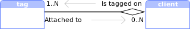
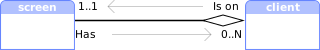

Module: client
A process window managed by AwesomeWM.
Clients are the name used by Awesome (and X11) to refer to a window.
A program can have multiple clients (e.g. for dialogs) or none at all (e.g.
command line applications).
Clients are usually grouped by classes.
A class is the name used by X11 to help the window manager distinguish
between windows and write rules for them. A client’s behavior is also
defined by its type and size_hints properties.
See the xprop command line application to query properties for a client.

The client’s :geometry() function returns a table with x, y, width
and height. The area returned excludes the border width.
All clients also have a shape_bounding and shape_clip used to “crop” the
client’s content.
Finally, each clients can have titlebars (see awful.titlebar).
Some signal names are starting with a dot. These dots are artefacts from the documentation generation, you get the real signal name by removing the starting dot.
Accessing client objects can be done in multiple ways depending on the context. To get the currently focused client:
local c = client.focus if c then -- do something end
To get a list of all clients, use client:get:
for _, c in ipairs(client.get()) do -- do something end
To execute a callback when a new client is added, use the manage signal:
client.connect_signal("request::manage", function(c) -- do something end)
To be notified when a property of a client changed:
client.connect_signal("property::name", function(c) -- do something end)
To be notified when a property of a specific client c changed:
c:connect_signal("property::name", function() -- do something end)
To get all the clients for a screen use either screen.clients or screen.tiled_clients.
Core components relationship
| Acquire other objects from a client | ||
|---|---|---|
| Class | Property | |
| tag |  | c.tags |
| screen |  | c.screen |
| awful.key | c:keys() | |
| awful.button | c:buttons() | |
| Acquire a client from other objects | ||
|---|---|---|
| Class | Property | |
| tag | t:clients() | |
| screen | s.clients | |
| screen | s.hidden_clients | |
| screen | s.tiled_clients | |
| mouse | mouse.current_client | |
Info:
- Copyright: 2008-2009 Julien Danjou
-
Originally authored by: Julien Danjou <julien@danjou.info>
(Full contributors list available on our github project)
Static module functions
| client.instances () -> integer | Get the number of instances. | |
| client.get (screen, stacked) -> table | Get all clients into a table. | |
| client.disconnect_signal (name, func) | Disconnect from a signal. | |
| client.emit_signal (name, ...) | Emit a signal. | |
| client.connect_signal (name, func) | Connect to a signal. | |
| awful.client.next (i, sel, stacked) -> client or nil | Get a client by its relative index to another client. | |
| awful.client.swap.bydirection (dir, c, stacked) | Swap a client with another client in the given direction. | |
| awful.client.swap.global_bydirection (dir, sel) | Swap a client with another client in the given direction. | |
| awful.client.swap.byidx (i, c) | Swap a client by its relative index. | |
| awful.client.cycle (clockwise, s, stacked) | Cycle through the clients to change the focus. | |
| awful.client.restore (s) -> client | Restore (=unminimize) a random client. | |
| awful.client.property.persist (prop, kind) | Set a client property to be persistent across restarts (via X properties). | |
| awful.client.iterate (filter, start, s) -> function | Returns an iterator to cycle through clients. | |
| awful.client.urgent.jumpto (merge) | Jump to the client that received the urgent hint first. |
Object properties
| window | integer | The X window id. | Read only |
| name | string | The client title. | |
| skip_taskbar | boolean | True if the client does not want to be in taskbar. | |
| type | string | The window type. | Read only |
| class | string | The client class. | Read only |
| instance | string | The client instance. | Read only |
| pid | integer | The client PID, if available. | Read only |
| role | string | The window role, if available. | Read only |
| machine | string | The machine the client is running on. | Read only |
| icon_name | string | The client name when iconified. | Read only |
| icon | image | The client icon as a surface. | |
| icon_sizes | table | The available sizes of client icons. | Read only |
| screen | screen | Client screen. | |
| hidden | boolean | Define if the client must be hidden (Never mapped, invisible in taskbar). | |
| minimized | boolean | Define if the client must be iconified (Only visible in taskbar). | |
| size_hints_honor | boolean | Honor size hints, e.g. | |
| border_width | integer or nil | The client border width. | |
| border_color | color or nil | The client border color. | |
| urgent | boolean |
Set to true when the client ask for attention.
|
|
| content | raw_curface | A cairo surface for the client window content. | Read only |
| opacity | number | The client opacity. | |
| ontop | boolean | The client is on top of every other windows. | |
| above | boolean | The client is above normal windows. | |
| below | boolean | The client is below normal windows. | |
| fullscreen | boolean | The client is fullscreen or not. | |
| maximized | boolean | The client is maximized (horizontally and vertically) or not. | |
| maximized_horizontal | boolean | The client is maximized horizontally or not. | |
| maximized_vertical | boolean | The client is maximized vertically or not. | |
| transient_for | client or nil | The client the window is transient for. | Read only |
| group_window | integer | Window identification unique to a group of windows. | Read only |
| leader_window | integer | Identification unique to windows spawned by the same command. | Read only |
| size_hints | table or nil | A table with size hints of the client. | Read only |
| motif_wm_hints | table | The motif WM hints of the client. | Read only |
| sticky | boolean | Set the client sticky (Available on all tags). | |
| modal | boolean | Indicate if the client is modal. | |
| focusable | boolean | True if the client can receive the input focus. | |
| shape_bounding | image | The client’s bounding shape as set by awesome as a (native) cairo surface. | |
| shape_clip | image | The client’s clip shape as set by awesome as a (native) cairo surface. | |
| shape_input | image | The client’s input shape as set by awesome as a (native) cairo surface. | |
| client_shape_bounding | image | The client’s bounding shape as set by the program as a (native) cairo surface. | Read only |
| client_shape_clip | image | The client’s clip shape as set by the program as a (native) cairo surface. | Read only |
| startup_id | string | The FreeDesktop StartId. | |
| valid | boolean | If the client that this object refers to is still managed by awesome. | Read only |
| first_tag | tag or nil | The first tag of the client. | Read only |
| buttons | table | Get or set mouse buttons bindings for a client. | |
| keys | table | Get or set keys bindings for a client. | |
| marked | boolean | If a client is marked or not. | |
| is_fixed | boolean | Return if a client has a fixed size or not. | Read only |
| immobilized_horizontal | boolean | Is the client immobilized horizontally? | Read only |
| immobilized_vertical | boolean | Is the client immobilized vertically? | Read only |
| floating | boolean | The client floating state. | |
| x | integer | The x coordinates. | |
| y | integer | The y coordinates. | |
| width | integer | The width of the client. | |
| height | integer | The height of the client. | |
| dockable | boolean | If the client is dockable. | |
| requests_no_titlebar | boolean | If the client requests not to be decorated with a titlebar. | |
| shape | shape | Set the client shape. | |
| active | boolean | Return true if the client is active (has focus). | Read only |
Object methods
| :struts (struts) -> table | Return client struts (reserved space at the edge of the screen). | |
| :isvisible () -> boolean | Check if a client is visible on its screen. | |
| :kill () | Kill a client. | |
| :swap (c) | Swap a client with another one in global client list. | |
| :tags (tags_table) -> table | Access or set the client tags. | |
| :raise () | Raise a client on top of others which are on the same layer. | |
| :lower () | Lower a client on bottom of others which are on the same layer. | |
| :unmanage () | Stop managing a client. | |
| :geometry (geo) -> table | Return or set client geometry. | |
| :apply_size_hints (width, height) -> (integer, integer) | Apply size hints to a size. | |
| :get_icon (index) -> surface | Get the client’s n-th icon. | |
| :jump_to (merge) | Jump to the given client. | |
| :append_keybinding (key) | Append a keybinding. | |
| :remove_keybinding (key) | Remove a keybinding. | |
| :append_mousebinding (button) | Append a mousebinding. | |
| :remove_mousebinding (button) | Remove a mousebinding. | |
| :to_primary_section () | Move the client to the most significant layout position. | |
| :to_secondary_section () | Move the client to the least significant layout position. | |
| :relative_move (x, y, w, h) | Move/resize a client relative to current coordinates. | |
| :move_to_tag (target) | Move a client to a tag. | |
| :toggle_tag (target) | Toggle a tag on a client. | |
| :move_to_screen (s) | Move a client to a screen. | |
| :to_selected_tags () | Find suitable tags for newly created clients. | |
| :get_transient_for_matching (matcher) -> client or nil | Get a matching transient_for client (if any). | |
| :is_transient_for (c2) -> client or nil | Is a client transient for another one? | |
| :activate {[args]} | Activate (focus) a client. | |
| :grant (permission, context) | Grant a permission for a client. | |
| :deny (permission, context) | Deny a permission for a client. | |
| :emit_signal (name, ...) | Emit a signal. | Inherited from gears.object |
| :connect_signal (name, func) | Connect to a signal. | Inherited from gears.object |
| :weak_connect_signal (name, func) | Connect to a signal weakly. | Inherited from gears.object |
Signals
| scanning | Emitted when AwesomeWM is about to scan for existing clients. | |
| scanned | Emitted when AwesomeWM is done scanning for clients. | |
| focus | Emitted when a client gains focus. | |
| list | Emitted before request::manage, after request::unmanage, and when clients swap. | |
| swapped | Emitted when 2 clients are swapped | |
| request::manage | Emitted when a new client appears and gets managed by Awesome. | |
| request::unmanage | Emitted when a client is going away. | |
| button::press | Emitted when a mouse button is pressed in a client. | |
| button::release | Emitted when a mouse button is released in a client. | |
| mouse::enter | Emitted when the mouse enters a client. | |
| mouse::leave | Emitted when the mouse leaves a client. | |
| mouse::move | Emitted when the mouse moves within a client. | |
| request::activate | Emitted when a client should get activated (focused and/or raised). | |
| request::autoactivate | Emitted when an event could lead to the client being activated. | |
| request::geometry | Emitted when something request a client’s geometry to be modified. | |
| request::tag | Emitted when a client requests to be moved to a tag or needs a new tag. | |
| request::urgent | Emitted when any client’s urgent property changes. | |
| request::default_mousebindings | Emitted once to request default client mousebindings during the initial startup sequence. | |
| request::default_keybindings | Emitted once to request default client keybindings during the initial startup sequence. | |
| tagged | Emitted when a client gets tagged. | |
| unfocus | Emitted when a client gets unfocused. | |
| untagged | Emitted when a client gets untagged. | |
| raised | Emitted when the client is raised within its layer. | |
| lowered | Emitted when the client is lowered within its layer. | |
| property::floating_geometry | The last geometry when client was floating. | |
| request::titlebars | Emitted when a client need to get a titlebar. | |
| request::border | Emitted when the border client might need to be update. |
Deprecated signals
| manage | Use request::manage. | Deprecated |
| unmanage | Use request::unmanage. | Deprecated |
| marked | The client marked signal. | Deprecated |
| unmarked | The client unmarked signal. | Deprecated |
Theme variables
| beautiful.border_color_marked | color | The border color when the client is marked. | |
| beautiful.border_color_floating | color | The fallback border color when the client is floating. | |
| beautiful.border_color_maximized | color | The fallback border color when the client is maximized. | |
| beautiful.border_color_fullscreen | color | The fallback border color when the client is fullscreen. | |
| beautiful.border_color_active | color | The border color when the client is active. | |
| beautiful.border_color_normal | color | The border color when the client is not active. | |
| beautiful.border_color_urgent | color | The border color when the client has the urgent property set. | |
| beautiful.border_color_new | color | The border color when the client is not active and new. | |
| beautiful.border_color_floating_active | color | The border color when the (floating) client is active. | |
| beautiful.border_color_floating_normal | color | The border color when the (floating) client is not active. | |
| beautiful.border_color_floating_urgent | color | The border color when the (floating) client has the urgent property set. | |
| beautiful.border_color_floating_new | color | The border color when the (floating) client is not active and new. | |
| beautiful.border_color_maximized_active | color | The border color when the (maximized) client is active. | |
| beautiful.border_color_maximized_normal | color | The border color when the (maximized) client is not active. | |
| beautiful.border_color_maximized_urgent | color | The border color when the (maximized) client has the urgent property set. | |
| beautiful.border_color_maximized_new | color | The border color when the (maximized) client is not active and new. | |
| beautiful.border_color_fullscreen_active | color | The border color when the (fullscreen) client is active. | |
| beautiful.border_color_fullscreen_normal | color | The border color when the (fullscreen) client is not active. | |
| beautiful.border_color_fullscreen_urgent | color | The border color when the (fullscreen) client has the urgent property set. | |
| beautiful.border_color_fullscreen_new | color | The border color when the (fullscreen) client is not active and new. | |
| beautiful.border_width | integer | The fallback border width when nothing else is set. | |
| beautiful.border_width_floating | integer | The fallback border width when the client is floating. | |
| beautiful.border_width_maximized | integer | The fallback border width when the client is maximized. | |
| beautiful.border_width_normal | integer | The client border width for the normal clients. | |
| beautiful.border_width_active | integer | The client border width for the active client. | |
| beautiful.border_width_urgent | integer | The client border width for the urgent clients. | |
| beautiful.border_width_new | integer | The client border width for the new clients. | |
| beautiful.border_width_floating_normal | integer | The client border width for the normal floating clients. | |
| beautiful.border_width_floating_active | integer | The client border width for the active floating client. | |
| beautiful.border_width_floating_urgent | integer | The client border width for the urgent floating clients. | |
| beautiful.border_width_floating_new | integer | The client border width for the new floating clients. | |
| beautiful.border_width_maximized_normal | integer | The client border width for the normal maximized clients. | |
| beautiful.border_width_maximized_active | integer | The client border width for the active maximized client. | |
| beautiful.border_width_maximized_urgent | integer | The client border width for the urgent maximized clients. | |
| beautiful.border_width_maximized_new | integer | The client border width for the new maximized clients. | |
| beautiful.border_width_fullscreen_normal | integer | The client border width for the normal fullscreen clients. | |
| beautiful.border_width_fullscreen_active | integer | The client border width for the active fullscreen client. | |
| beautiful.border_width_fullscreen_urgent | integer | The client border width for the urgent fullscreen clients. | |
| beautiful.border_width_fullscreen_new | integer | The client border width for the new fullscreen clients. | |
| beautiful.border_width_fullscreen | integer | The client border width for the fullscreen clients. | |
| beautiful.opacity_normal | number | The client opacity for the normal clients. | |
| beautiful.opacity_active | number | The client opacity for the active client. | |
| beautiful.opacity_urgent | number | The client opacity for the urgent clients. | |
| beautiful.opacity_new | number | The client opacity for the new clients. | |
| beautiful.opacity_floating_normal | number | The client opacity for the normal floating clients. | |
| beautiful.opacity_floating_active | number | The client opacity for the active floating client. | |
| beautiful.opacity_floating_urgent | number | The client opacity for the urgent floating clients. | |
| beautiful.opacity_floating_new | number | The client opacity for the new floating clients. | |
| beautiful.opacity_floating | number | The client opacity for the floating clients. | |
| beautiful.opacity_maximized_normal | number | The client opacity for the normal maximized clients. | |
| beautiful.opacity_maximized_active | number | The client opacity for the active maximized client. | |
| beautiful.opacity_maximized_urgent | number | The client opacity for the urgent maximized clients. | |
| beautiful.opacity_maximized_new | number | The client opacity for the new maximized clients. | |
| beautiful.opacity_maximized | number | The client opacity for the maximized clients. | |
| beautiful.opacity_fullscreen_normal | number | The client opacity for the normal fullscreen clients. | |
| beautiful.opacity_fullscreen_active | number | The client opacity for the active fullscreen client. | |
| beautiful.opacity_fullscreen_urgent | number | The client opacity for the urgent fullscreen clients. | |
| beautiful.opacity_fullscreen_new | number | The client opacity for the new fullscreen clients. | |
| beautiful.opacity_fullscreen | number | The client opacity for the fullscreen clients. |
Deprecated functions
| awful.client.jumpto (c, merge) | Jump to the given client. | Deprecated |
| awful.client.visible (s, stacked) | Get visible clients from a screen. | Deprecated |
| awful.client.tiled (s, stacked) | Get visible and tiled clients | Deprecated |
| awful.client.getmaster (s) | Get the master window. | Deprecated |
| awful.client.setmaster (c) | Set the client as master: put it at the beginning of other windows. | Deprecated |
| awful.client.setslave (c) | Set the client as slave: put it at the end of other windows. | Deprecated |
| awful.client.moveresize (x, y, w, h, c) | Move/resize a client relative to current coordinates. | Deprecated |
| awful.client.movetotag (target, c) | Move a client to a tag. | Deprecated |
| awful.client.toggletag (target, c) | Toggle a tag on a client. | Deprecated |
| awful.client.movetoscreen (c, s) | Move a client to a screen. | Deprecated |
| awful.client.mark (c) | Mark a client, and then call ‘marked’ hook. | Deprecated |
| awful.client.unmark (c) | Unmark a client and then call ‘unmarked’ hook. | Deprecated |
| awful.client.ismarked (c) | Check if a client is marked. | Deprecated |
| awful.client.togglemarked (c) | Toggle a client as marked. | Deprecated |
| awful.client.getmarked () | Return the marked clients and empty the marked table. | Deprecated |
| awful.client.floating.set (c, s) | Set a client floating state, overriding auto-detection. | Deprecated |
| awful.client.isfixed (c) | Return if a client has a fixed size or not. | Deprecated |
| awful.client.floating.get (c) | Get a client floating state. | Deprecated |
| awful.client.floating.toggle (c) | Toggle the floating state of a client between ‘auto’ and ‘true’. | Deprecated |
| awful.client.dockable.get (c) | Get a client’s dockable state. | Deprecated |
| awful.client.dockable.set (c, value) | Set a client’s dockable state, overriding auto-detection. | Deprecated |
| awful.client.property.get (c, prop) | Get a client property. | Deprecated |
| awful.client.property.set (c, prop, value) | Set a client property. | Deprecated |
| awful.client.run_or_raise (cmd, matcher, merge) | Switch to a client matching the given condition if running, else spawn it. | Deprecated |
| awful.client.get_transient_for_matching (c, matcher) | Get a matching transient_for client (if any). | Deprecated |
| awful.client.is_transient_for (c, c2) | Is a client transient for another one? | Deprecated |
Layout related functions
| awful.client.idx | Calculate a client’s column number, index in that column, and number of visible clients in this column. | |
| awful.client.setwfact | Define how tall a client should be in the tile layout. | |
| awful.client.incwfact | Change window factor of a client. |
Extra properties available in the rules
| placement | N/A | The client default placement on the screen. | |
| honor_padding | boolean | When applying the placement, honor the screen padding. | |
| honor_workarea | boolean | When applying the placement, honor the screen work area. | |
| tag | tag | The client default tag. | |
| tags | table | The client default tags. | |
| new_tag | table or string or boolean | Create a new tag for this client. | |
| switch_to_tags | boolean | Unselect the current tags and select this client tags. | |
| focus | boolean | Define if the client should grab focus by default. | |
| titlebars_enabled | boolean | Should this client have a titlebar by default. | |
| callback | N/A | A function to call when this client is ready. |
Tables
| awful.client.object | Client class. |
Fields
| client.focus | client | The focused client or nil (in case there is none). |
lib.awful.client.focus Functions
| awful.client.focus.history.delete (c) | Remove a client from the focus history | |
| awful.client.focus.byidx (i, c) | Focus a client by its relative index. | |
| awful.client.focus.filter (c) | Filter out window that we do not want handled by focus. | |
| awful.client.focus.history.add (c) | Update client focus history. | |
| awful.client.focus.history.get (s, idx, filter) | Get the latest focused client for a screen in history. | |
| awful.client.focus.history.previous () | Focus the previous client in history. | |
| awful.client.focus.bydirection (dir, c, stacked) | Focus a client by the given direction. | |
| awful.client.focus.global_bydirection (dir, c, stacked) | Focus a client by the given direction. | |
| awful.client.focus.history.is_enabled () | Is history tracking enabled? | |
| awful.client.focus.history.enable_tracking () | Enable history tracking. | |
| awful.client.focus.history.disable_tracking () | Disable history tracking. |
Static module functions
- 🔗 client.instances () -> integer
-
Get the number of instances.
Returns:
-
integer
The number of client objects alive.
- 🔗 client.get (screen, stacked) -> table
-
Get all clients into a table.
Parameters:
Name Type(s) Description screen Optional integer or screen A screen number to filter clients on. stacked Optional boolean Return clients in stacking order? (ordered from top to bottom). Returns:
-
table
A table with clients.
Usage:
for _, c in ipairs(client.get()) do -- do something end
- 🔗 client.disconnect_signal (name, func)
-
Disconnect from a signal.
Parameters:
Name Type(s) Description name string The name of the signal. func function The callback that should be disconnected. - 🔗 client.emit_signal (name, ...)
-
Emit a signal.
Parameters:
Name Type(s) Description name string The name of the signal. ... Extra arguments for the callback functions. Each connected function receives the object as first argument and then any extra arguments that are given to emit_signal(). - 🔗 client.connect_signal (name, func)
-
Connect to a signal.
Parameters:
Name Type(s) Description name string The name of the signal. func function The callback to call when the signal is emitted. - 🔗 awful.client.next (i, sel, stacked) -> client or nil
-
Get a client by its relative index to another client.
If no client is passed, the focused client will be used.
Parameters:
Name Type(s) Description Default value i int The index. Use 1to get the next,-1to get the previous.Not applicable sel Optional client The client. client.focusstacked Optional boolean Use stacking order? (top to bottom) falseReturns:
-
client or nil
A client, or nil if no client is available.
See also:
client.get Get all clients into a table. static module functions Usage:
-- focus the next window in the index awful.client.next(1) -- focus the previous awful.client.next(-1)
- 🔗 awful.client.swap.bydirection (dir, c, stacked)
-
Swap a client with another client in the given direction.
This will not cross the screen boundary. If you want this behavior, use awful.client.swap.global_bydirection.
-- It will go up in the same column. awful.client.swap.bydirection("up", client.focus) -- Nothing happens because it cannot change screen. awful.client.swap.bydirection("right", client.focus) -- Moves to the first column. awful.client.swap.bydirection("left", client.focus)Parameters:
Name Type(s) Description Default value dir string The direction, can be either “up”, “down”, “left” or “right”. Not applicable c Optional client The client. "focused"stacked Optional boolean Use stacking order? (top to bottom) falseSee also:
swap Swap a client with another one in global client list. object methods swapped Emitted when 2 clients are swapped signals awful.client.swap.global_bydirection Swap a client with another client in the given direction. static module functions awful.client.swap.byidx Swap a client by its relative index. static module functions awful.client.cycle Cycle through the clients to change the focus. static module functions - 🔗 awful.client.swap.global_bydirection (dir, sel) · 1 permission
-
Swap a client with another client in the given direction.
Swaps across screens.
-- It will go up in the same column. awful.client.swap.global_bydirection("up", client.focus) -- It will cross to screen[2]. awful.client.swap.global_bydirection("right", client.focus) -- Moves to the first column. awful.client.swap.global_bydirection("left", client.focus)Parameters:
Name Type(s) Description Default value dir string The direction, can be either “up”, “down”, “left” or “right”. Not applicable sel Optional client The client. client.focusSee also:
swap Swap a client with another one in global client list. object methods swapped Emitted when 2 clients are swapped signals awful.client.swap.bydirection Swap a client with another client in the given direction. static module functions awful.client.swap.byidx Swap a client by its relative index. static module functions awful.client.cycle Cycle through the clients to change the focus. static module functions
Click to display more Requested actions or permissions:
Class Permission Context Default Description client activate client.swap.global_bydirection granted When a client could be activated because awful.client.swap.global_bydirection was called. - 🔗 awful.client.swap.byidx (i, c)
-
Swap a client by its relative index.
Usage example output:
c1:1, c2:2, c3:3, c4:4, Call swap.byidx c4:1, c2:2, c3:3, c1:4, Call swap.byidx c4:1, c1:2, c3:3, c2:4,Usage example:
-- Print at which index each client is now at. local function print_indices() local output = "" for idx, c in ipairs(client.get()) do output = output .. c.name .. ":" .. idx .. ", " end print(output) end print_indices() print("Call swap.byidx") awful.client.swap.byidx(3, client.get()[1]) print_indices() print("Call swap.byidx") awful.client.swap.byidx(2, client.get()[4]) print_indices()Parameters:
Name Type(s) Description Default value i integer The index. Use 1to get the next,-1to get the previous.Not applicable c Optional client The client, otherwise focused one is used. client.focusSee also:
swap Swap a client with another one in global client list. object methods swapped Emitted when 2 clients are swapped signals awful.client.swap.bydirection Swap a client with another client in the given direction. static module functions awful.client.swap.global_bydirection Swap a client with another client in the given direction. static module functions awful.client.cycle Cycle through the clients to change the focus. static module functions awful.client.next Get a client by its relative index to another client. static module functions - 🔗 awful.client.cycle (clockwise, s, stacked)
-
Cycle through the clients to change the focus.
This will swap the client from one position to the next in the layout.
awful.client.cycle(true, awful.screen.focused(), true) awful.client.cycle(true, awful.screen.focused(), true)Parameters:
Name Type(s) Description Default value clockwise Optional boolean True to cycle clients clockwise. falses Optional screen The screen where to cycle clients. awful.screen.focused()stacked Optional boolean Use stacking order? (top to bottom) falseSee also:
swap Swap a client with another one in global client list. object methods swapped Emitted when 2 clients are swapped signals awful.client.swap.bydirection Swap a client with another client in the given direction. static module functions awful.client.swap.global_bydirection Swap a client with another client in the given direction. static module functions awful.client.swap.byidx Swap a client by its relative index. static module functions - 🔗 awful.client.restore (s) -> client
-
Restore (=unminimize) a random client.
for i = 1, 5 do awful.spawn("c"..i) end -- Minimize everything. for _, c in ipairs(client.get()) do c.minimized = true end -- Restore a random client. awful.client.restore()Parameters:
Name Type(s) Description s screen The screen to use. Returns:
-
client
The restored client if some client was restored, otherwise nil.
- 🔗 awful.client.property.persist (prop, kind)
-
Set a client property to be persistent across restarts (via X properties).
Parameters:
Name Type(s) Description prop string The property name. kind string The type (used for register_xproperty). One of “string”, “number” or “boolean”. - 🔗 awful.client.iterate (filter, start, s) -> function
-
Returns an iterator to cycle through clients.
Starting from the client in focus or the given index, all clients that match a given criteria.
Parameters:
Name Type(s) Description Default value filter function A function that returns true to indicate a positive match. Not applicable start integer What index to start iterating from. Defaults to using the index of the currently focused client. Not applicable s Optional screen Which screen to use. nil means all screens. nilReturns:
-
function
A Lua iterator (to use in a
forloop).Usage:
-- un-minimize all urxvt instances local urxvt = function (c) return ruled.client.match(c, {class = "URxvt"}) end for c in awful.client.iterate(urxvt) do c.minimized = false end
- 🔗 awful.client.urgent.jumpto (merge)
-
Jump to the client that received the urgent hint first.
awful.client.urgent.jumpto(false)Parameters:
Name Type(s) Description merge bool or function If true then merge tags (select the client’s first tag additionally) when the client is not visible. If it is a function, it will be called with the client as argument.
Object properties
- 🔗 window integer · 1 signal · read only
-
The X window id.
This is rarely useful, but some DBus protocols will have this ID in their API, so it can be useful when writing AwesomeWM bindings for them.
Constraints:
Default value : This is generated by X11. Negative allowed : false
Click to display more Emit signals:
- 🔗 name string · 1 signal
-
The client title.
This is the text which will be shown in awful.widget.tasklist and
awful.titlebar.widget.titlewidget.Constraints:
Default value : This is provided by the application. See also:
awful.titlebar Create widget area on the edge of a client. module awful.widget.tasklist Tasklist widget module for awful. module
Click to display more Emit signals:
- 🔗 skip_taskbar boolean · 1 signal
-
True if the client does not want to be in taskbar.
Some clients, like docked bars or some sticky clients such as wallpaper sensors like Conky have no value in the awful.widget.tasklist and should not be shown there.
The default value of this property reflects the value of the
_NET_WM_STATE_SKIP_TASKBARX11 protocol xproperty. Clients can modify this state through this property.c1.skip_taskbar = false c2.skip_taskbar = true c3.skip_taskbar = falseConstraints:
Default value : falseValid values : trueorfalse.See also:
sticky Set the client sticky (Available on all tags). object properties hidden Define if the client must be hidden (Never mapped, invisible in taskbar). object properties unmanage Use request::unmanage. deprecated signals
Click to display more Emit signals:
property::skip_taskbarWhen the skip_taskbar value changes.selfclient The object which changed (useful when connecting many object to the same callback).
- 🔗 type string · 1 signal · read only
-
The window type.
This is useful in, among other places, the ruled.client rules to apply different properties depending on the client types. It is also used throughout the API to alter the client (and wibox) behavior depending on the type. For example, clients with the
docktype are placed on the side of the screen while other likecomboare totally ignored and never considered clients in the first place.Valid types are:
Name Description desktop The root client, it cannot be moved or resized. dock A client attached to the side of the screen. splash A client, usually without titlebar shown when an application starts. dialog A dialog, see transient_for. menu A context menu. toolbar A floating toolbar. utility dropdown_menu A context menu attached to a parent position. popup_menu A context menu. notification A notification popup. combo A combobox list menu. dnd A drag and drop indicator. normal A normal application main window. More information can be found here
Constraints:
Default value : This is provided by the application. See also:
ruled.client Apply properties to a new client based on pre-determined rules. module
Click to display more Emit signals:
- 🔗 class string · 1 signal · read only
-
The client class.
A class usually maps to the application name. It is useful in, among other places, the rules to apply different properties to different clients. It is also useful, along with instance, to implement “windows counter” used in many popular docks and Alt-Tab like popups.
To get a client class from the command line, use the command:
xprop WM_CLASSThe class will be the second string.
This should never change after the client is created, but some buggy application like the Spotify desktop client are known to violate the specification and do it anyway. There is a signal for this property, but it should hopefully never be useful. If your applications change their classes, please report a bug to them and point to ICCCM §4.1.2.5. It tends to break ruled.client and other AwesomeWM APIs.
Constraints:
Default value : This is provided by the application. See also:
instance The client instance. object properties ruled.client Apply properties to a new client based on pre-determined rules. module
Click to display more Emit signals:
- 🔗 instance string · 1 signal · read only
-
The client instance.
The instance is a subtype of the class. Each class can have multiple instances. This is useful in the ruled.client rules to filter clients and apply different properties to them.
To get a client instance from the command line, use the command:
xprop WM_CLASSThe instance will be the first string.
This should never change after the client is created. There is a signal for * this property, but it should hopefully never be useful. If your applications change their classes, please report a bug to them and point to ICCCM §4.1.2.5. It tends to break ruled.client and other AwesomeWM APIs.
Constraints:
Default value : This is provided by the application. See also:
class The client class. object properties ruled.client Apply properties to a new client based on pre-determined rules. module
Click to display more Emit signals:
- 🔗 pid integer · 1 signal · read only
-
The client PID, if available.
This will never change.
Constraints:
Default value : This is randomly assigned by the kernel. Negative allowed : false
Click to display more Emit signals:
- 🔗 role string · 1 signal · read only
-
The window role, if available.
Constraints:
Default value : This is provided by the application. See also:
instance The client instance. object properties class The client class. object properties
Click to display more Emit signals:
- 🔗 machine string · 1 signal · read only
-
The machine the client is running on.
X11 windows can “live” in one computer but be shown in another one. This is called “network transparency” and is either used directly by allowing remote windows using the
xhostscommand or using proxies such asssh -Xorssh -Y.According to EWMH, this property contains the value returned by
gethostname()on the computer that the client is running on.Constraints:
Default value : This is the hostname unless the client is from an SSH session or using the rarely used direct X11 network socket.
Click to display more Emit signals:
- 🔗 icon_name string · 1 signal · read only
-
The client name when iconified.
Constraints:
Default value : This is provided by the application.
Click to display more Emit signals:
- 🔗 icon image · 1 signal
-
The client icon as a surface.
This property holds the client icon closest to the size configured via awesome.set_preferred_icon_size.
It is not a path or a “real” file. Rather, it is already a bitmap surface.
Typically you would want to use awful.widget.clienticon to get this as a widget.
Working with icons is tricky because their surfaces do not use reference counting correctly. If
gears.surface(c.icon)is called multiple time on the same icon, it will cause a double-free error and Awesome will crash. To get a copy of the icon, you can use:local s = gears.surface(c.icon) local img = cairo.ImageSurface.create(cairo.Format.ARGB32, s:get_width(), s:get_height()) local cr = cairo.Context(img) cr:set_source_surface(s, 0, 0) cr:paint()(Note that awesome.set_preferred_icon_size defaults to
0if it wasn’t set. It means that, by default, the preferred icon provided will be the smallest available)Constraints:
Default value : This is provided by the application. Type description: string : Interpreted as a path to an image file. string : A valid SVG content. cairo : A cairo image surface: Directly used as-is. librsvg : A librsvg handle object: Directly used as-is. nil : Unset the image. See also:
awful.widget.clienticon Container showing the icon of a client. module Usage:
local ib = wibox.widget.imagebox(c.icon)
Click to display more Emit signals:
- 🔗 icon_sizes table · 1 signal · read only
-
The available sizes of client icons. This is a table where each entry contains the width and height of an icon.
Example:
{ { 24, 24 }, { 32, 32 }, { 64, 64 }, }Constraints:
Default value : This is provided by the application. Table content: : A list of tables. Each table has the following rows: 1(integer): The width value. 2(integer): The height value. See also:
awful.widget.clienticon Container showing the icon of a client. module get_icon Get the client’s n-th icon. object methods
Click to display more Emit signals:
property::icon_sizesWhen the icon_sizes value changes.selfclient The object which changed (useful when connecting many object to the same callback).
- 🔗 screen screen · 1 signal
-
Client screen.
The screen corresponds to the top-left corner of the window.
Please note that clients can only be on one screen at once. X11 does not natively allow clients to be in multiple locations at once. Changing the screen directly will affect the tags and may cause several other changes to the state in order to ensure that a client’s position and its screen are consistent.
-- Move the mouse to screen 3 mouse.coords {x = 1800, y = 100 } -- Spawn a client on screen #3 awful.spawn("firefox") client.get()[1].screen = screen[2]Constraints:
Default value : This usually correspond to where the top-left (or other gravities) is placed. Then it is mapped to the screen geometry.Type description: screen : A valid screen object such as retured by awful.screen.focused()or mouse.screen.integer : A screen global id. Avoid using this since they are unsorted. string : The "primary"value is also valid.See also:
move_to_screen Move a client to a screen. object methods
Click to display more Emit signals:
- 🔗 hidden boolean · 1 signal
-
Define if the client must be hidden (Never mapped, invisible in taskbar).
Constraints:
Default value : falseValid values : trueorfalse.See also:
minimized Define if the client must be iconified (Only visible in taskbar). object properties skip_taskbar True if the client does not want to be in taskbar. object properties unmanage Use request::unmanage. deprecated signals
Click to display more Emit signals:
- 🔗 minimized boolean · 1 signal
-
Define if the client must be iconified (Only visible in taskbar).
Minimized clients are still part of tags and screens, but they are not displayed. You can unminimize using
c.minimized = false, but if you also want to set the focus, it is better to use:c:activate { context = "unminimized", raise = true }for _ = 1, 3 do awful.spawn("") end client.get()[1].minimized = true -- That's the best way to unminimize if you also want to set the focus. client.get()[1]:activate { context = "unminimize", raise = true, }Constraints:
Default value : falseValid values : trueorfalse.See also:
hidden Define if the client must be hidden (Never mapped, invisible in taskbar). object properties isvisible Check if a client is visible on its screen. object methods activate Activate (focus) a client. object methods
Click to display more Emit signals:
- 🔗 size_hints_honor boolean · 1 signal
-
Honor size hints, e.g. respect size ratio.
For example, a terminal such as
xtermrequire the client size to be a multiple of the character size. Honoring size hints will cause the terminal window to have a small gap at the bottom.This is enabled by default. To disable it by default, see ruled.client.
Constraints:
Default value : trueValid values : trueorfalse.See also:
size_hints A table with size hints of the client. object properties
Click to display more Emit signals:
property::size_hints_honorWhen the size_hints_honor value changes.selfclient The object which changed (useful when connecting many object to the same callback).
- 🔗 border_width integer or nil · 1 signal · 21 theme variables
-
The client border width.
When manually set (for example, in ruled.client rules), this value will be static. Otherwise, it is controlled by many beautiful variables.
Be careful, the borders are around the geometry, not part of it. If you want more fancy border, use the awful.titlebar API to create titlebars on each side of the client.
c1.border_width = 0 c2.border_width = 2 c3.border_width = 10Constraints:
Default value : nilType description: nil : Let AwesomeWM manage it based on the client state. Unit : pixel Negative allowed : false See also:
request::border Emitted when the border client might need to be update. signals awful.permissions.update_border The default client request::border handler. (awful.permissions) request handlers border_color The client border color. object properties
Click to display more Emit signals:
property::border_widthWhen the border_width value changes.selfclient The object which changed (useful when connecting many object to the same callback).
Consumed theme variables:
Theme variable Usage beautiful.border_width_active beautiful.border_width_normal beautiful.border_width_new beautiful.border_width_urgent beautiful.border_width_floating beautiful.border_width_floating_active beautiful.border_width_floating_normal beautiful.border_width_floating_new beautiful.border_width_floating_urgent beautiful.border_width_maximized beautiful.border_width_maximized_active beautiful.border_width_maximized_normal beautiful.border_width_maximized_new beautiful.border_width_maximized_urgent beautiful.border_width_fullscreen beautiful.border_width_fullscreen_active beautiful.border_width_fullscreen_normal beautiful.border_width_fullscreen_new beautiful.border_width_fullscreen_urgent beautiful.fullscreen_hide_borderHide the border on fullscreen clients. beautiful.maximized_hide_borderHide the border on maximized clients. - 🔗 border_color color or nil · 1 signal · 20 theme variables
-
The client border color.
c.border_color = "#ff00ff"Note that setting this directly will override and disable all related theme variables.
Setting a transparent color (e.g. to implement dynamic borders without size changes) is supported, but requires the color to be set to
#00000000specifically. Other RGB colors with an alpha of0won’t work.Constraints:
Default value : nilType description: nil : Let AwesomeWM manage it based on the client state. string : An hexadecimal color code, such as "#ff0000"for red.string : A color name, such as "red".table : A gradient table. cairo.pattern : Any valid Cairo pattern. cairo.pattern : A texture build from an image by gears.color.create_png_pattern See also:
request::border Emitted when the border client might need to be update. signals awful.permissions.update_border The default client request::border handler. (awful.permissions) request handlers gears.color This module simplifies the creation of cairo pattern objects. module border_width The client border width. object properties
Click to display more Emit signals:
property::border_colorWhen the border_color value changes.selfclient The object which changed (useful when connecting many object to the same callback).
Consumed theme variables:
- 🔗 urgent boolean · 1 signal · 13 theme variables · 3 permissions
-
Set to
truewhen the client ask for attention.The urgent state is the visual equivalent of the “bell” noise from old computer. It is set by the client when their state changed and they need attention. For example, a chat client will set it when a new message arrive. Some terminals, like
rxvt-unicode, will also set it when calling thebellcommand.There is many ways an urgent client can become for visible:
- Highlight in the awful.widget.taglist and awful.widget.tasklist
- Highlight in the awful.titlebar
- Highlight of the client border color (or width).
- Accessible using
Mod4+uin the default config. - Emit the
property::urgentsignal.
-- Affects mostly the taglist and tasklist.. beautiful.fg_urgent = "#ffffff" beautiful.bg_urgent = "#ff0000" -- Set the client border to be orange and large. beautiful.border_color_urgent = "#ffaa00" beautiful.border_width_urgent = 6 -- Set the titlebar green. beautiful.titlebar_bg_urgent = "#00ff00" beautiful.titlebar_fg_urgent = "#000000" -- This client is in the current tag. c2.urgent = true -- This client is in a deselected tag. c4.urgent = trueConstraints:
Default value : falseValid values : trueorfalse.See also:
request::border Emitted when the border client might need to be update. signals awful.client.urgent.jumpto Jump to the client that received the urgent hint first. static module functions
Click to display more Emit signals:
property::urgentWhen the urgent value changes.selfclient The object which changed (useful when connecting many object to the same callback).
Consumed theme variables:
Theme variable Usage beautiful.border_color_urgent The fallback color when the client is urgent. beautiful.border_color_floating_urgent The color when the client is floating and urgent. beautiful.border_color_maximized_urgent The color when the client is urbent and maximized. beautiful.border_color_fullscreen_urgent The color when the client is fullscreen and urgent. beautiful.border_width_urgent The fallback border width when the client is urgent. beautiful.border_width_floating_urgent The border width when the client is floating and urgent. beautiful.border_width_maximized_urgent The border width when the client is maximized and urgent. beautiful.border_width_fullscreen_urgent The border width when the client is fullscreen and urgent. beautiful.titlebar_fg_urgentbeautiful.titlebar_bg_urgentbeautiful.titlebar_bgimage_urgentbeautiful.fg_urgent beautiful.bg_urgent Requested actions or permissions:
Class Permission Context Default Description client border active granted When a client becomes active and is no longer urgent. client border inactive granted When a client stop being active and is no longer urgent. client border urgent granted When a client stop becomes urgent. - 🔗 content raw_curface · read only
-
A cairo surface for the client window content.
To get the screenshot, use:
gears.surface(c.content)To save it, use:
gears.surface(c.content):write_to_png(path)Please note that this only creates a new cairo surface referring to the client’s content. This means that changes to the client’s content may or may not become visible in the returned surface. If you want to take a screenshot, a copy of the surface’s content needs to be taken. Note that the content of parts of a window that are currently not visible are undefined.
The only way to get an animated client screenshot widget is to poll this property multiple time per seconds. This is obviously a bad idea.
This property has no signals when the content changes.
Constraints:
Default value : This is a live surface. Always use gears.surface to take a snapshot. See also:
gears.surface Utilities to integrate and manipulate Cairo drawing surfaces. module - 🔗 opacity number · 1 signal
-
The client opacity.
The opacity only works when a compositing manager, such as picom, is used. Otherwise, the clients will remain opaque.
c1.opacity = 1 c2.opacity = 0.5 c3.opacity = 0.1Constraints:
Default value : 1.0Minimum value : 0.0 Transparent. Maximum value : 1.0 Opaque. See also:
request::border Emitted when the border client might need to be update. signals awesome.composite_manager_running True if a composite manager is running. (awesome) fields
Click to display more Emit signals:
- 🔗 ontop boolean · 1 signal
-
The client is on top of every other windows.
Constraints:
Default value : falseValid values : trueorfalse.See also:
below The client is below normal windows. object properties above The client is above normal windows. object properties
Click to display more Emit signals:
- 🔗 above boolean · 1 signal
-
The client is above normal windows.
Constraints:
Default value : falseValid values : trueorfalse.See also:
below The client is below normal windows. object properties ontop The client is on top of every other windows. object properties
Click to display more Emit signals:
- 🔗 below boolean · 1 signal
-
The client is below normal windows.
Constraints:
Default value : falseValid values : trueorfalse.See also:
above The client is above normal windows. object properties ontop The client is on top of every other windows. object properties
Click to display more Emit signals:
- 🔗 fullscreen boolean · 1 signal · 1 permission
-
The client is fullscreen or not.
screen[1].clients[1].maximized = true screen[2].clients[1].maximized_vertical = true screen[3].clients[1].maximized_horizontal = true screen[4].clients[1].fullscreen = trueConstraints:
Default value : falseValid values : trueorfalse.See also:
maximized_horizontal The client is maximized horizontally or not. object properties maximized_vertical The client is maximized vertically or not. object properties immobilized_horizontal Is the client immobilized horizontally? object properties immobilized_vertical Is the client immobilized vertically? object properties maximized The client is maximized (horizontally and vertically) or not. object properties
Click to display more Emit signals:
property::fullscreenWhen the fullscreen value changes.selfclient The object which changed (useful when connecting many object to the same callback).
Requested actions or permissions:
Class Permission Context Default Description client geometry fullscreen granted When the client must be resized because it became (or stop being) fullscreen. - 🔗 maximized boolean · 1 signal · 1 permission
-
The client is maximized (horizontally and vertically) or not.
screen[1].clients[1].maximized = true screen[2].clients[1].maximized_vertical = true screen[3].clients[1].maximized_horizontal = true screen[4].clients[1].fullscreen = trueConstraints:
Default value : falseValid values : trueorfalse.See also:
request::border Emitted when the border client might need to be update. signals maximized_horizontal The client is maximized horizontally or not. object properties maximized_vertical The client is maximized vertically or not. object properties fullscreen The client is fullscreen or not. object properties immobilized_horizontal Is the client immobilized horizontally? object properties immobilized_vertical Is the client immobilized vertically? object properties
Click to display more Emit signals:
property::maximizedWhen the maximized value changes.selfclient The object which changed (useful when connecting many object to the same callback).
Requested actions or permissions:
Class Permission Context Default Description client geometry maximized granted When the client must be resized because it became (or stop being) maximized. - 🔗 maximized_horizontal boolean · 1 signal · 1 permission
-
The client is maximized horizontally or not.
screen[1].clients[1].maximized = true screen[2].clients[1].maximized_vertical = true screen[3].clients[1].maximized_horizontal = true screen[4].clients[1].fullscreen = trueConstraints:
Default value : falseValid values : trueorfalse.See also:
maximized_vertical The client is maximized vertically or not. object properties fullscreen The client is fullscreen or not. object properties immobilized_horizontal Is the client immobilized horizontally? object properties immobilized_vertical Is the client immobilized vertically? object properties maximized The client is maximized (horizontally and vertically) or not. object properties
Click to display more Emit signals:
property::maximized_horizontalWhen the maximized_horizontal value changes.selfclient The object which changed (useful when connecting many object to the same callback).
Requested actions or permissions:
Class Permission Context Default Description client geometry maximized_horizontal granted When the client must be resized because it became (or stop being) maximized horizontally. - 🔗 maximized_vertical boolean · 1 signal · 1 permission
-
The client is maximized vertically or not.
screen[1].clients[1].maximized = true screen[2].clients[1].maximized_vertical = true screen[3].clients[1].maximized_horizontal = true screen[4].clients[1].fullscreen = trueConstraints:
Default value : falseValid values : trueorfalse.See also:
maximized_horizontal The client is maximized horizontally or not. object properties fullscreen The client is fullscreen or not. object properties immobilized_horizontal Is the client immobilized horizontally? object properties immobilized_vertical Is the client immobilized vertically? object properties maximized The client is maximized (horizontally and vertically) or not. object properties
Click to display more Emit signals:
property::maximized_verticalWhen the maximized_vertical value changes.selfclient The object which changed (useful when connecting many object to the same callback).
Requested actions or permissions:
Class Permission Context Default Description client geometry maximized_vertical granted When the client must be resized because it became (or stop being) maximized vertically. - 🔗 transient_for client or nil · 1 signal · read only
-
The client the window is transient for.
A transient window is a client that “belongs” to another client. If the client is also modal, then the parent client cannot be focused while the child client exists. This is common for “Save as” dialogs or other dialogs where it is not possible to modify the content of the “parent” client while the dialog is open.
However, modal is not a requirement for using the transient_for concept. “Tools” such as popup palette in canvas-and-palettes applications can belong to each other without being modal.
Constraints:
Default value : nilSee also:
modal Indicate if the client is modal. object properties type The window type. object properties is_transient_for Is a client transient for another one? object methods get_transient_for_matching Get a matching transient_for client (if any). object methods
Click to display more Emit signals:
property::transient_forWhen the transient_for value changes.selfclient The object which changed (useful when connecting many object to the same callback).
- 🔗 group_window integer · 1 signal · read only
-
Window identification unique to a group of windows.
This is the ID of the group window, not a client object. The group window is most likely not a visible client, but only an invisible and internal window.
Constraints:
Default value : This is auto-generated by X11. Negative allowed : false See also:
leader_window Identification unique to windows spawned by the same command. object properties
Click to display more Emit signals:
property::group_windowWhen the group_window value changes.selfclient The object which changed (useful when connecting many object to the same callback).
- 🔗 leader_window integer · 1 signal · read only
-
Identification unique to windows spawned by the same command.
This is the ID of the group window, not a client object.
Constraints:
Default value : This is auto-generated by X11. Negative allowed : false See also:
transient_for The client the window is transient for. object properties modal Indicate if the client is modal. object properties group_window Window identification unique to a group of windows. object properties
Click to display more Emit signals:
property::leader_windowWhen the leader_window value changes.selfclient The object which changed (useful when connecting many object to the same callback).
- 🔗 size_hints table or nil · 1 signal · read only
-
A table with size hints of the client.
For details on the meaning of the fields, refer to ICCCM § 4.1.2.3
WM_NORMAL_HINTS.Please note that most fields are optional and may or may not be set.
When the client is tiled, the size_hints usually get in the way and cause the layouts to behave incorrectly. To mitigate this, it is often advised to set size_hints_honor to
falsein the ruled.client rules.Constraints:
Default value : nilTable keys: user_position (table|nil) : A table with xandykeys. It contains the preferred position of the client. This is set when the position has been modified by the user. Seeprogram_position.program_position (table|nil) : A table with xandykeys. It contains the preferred position of the client. This is set when the application itself requests a specific position. Seeuser_position.user_size (table|nil) : A table with widthandheight. This contains the client preferred size when it has previously been set by the user. Seeprogram_sizefor the equivalent when the applications itself wants to specify its preferred size.program_size (table|nil) : A table with widthandheight. This contains the client preferred size as specified by the application.max_width (integer|nil) : The maximum width (in pixels). max_height (integer|nil) : The maximum height (in pixels). min_width (integer|nil) : The minimum width (in pixels). min_height (integer|nil) : The minimum height (in pixels). width_inc (integer|nil) : The number of pixels by which the client width may be increased or decreased. For example, for terminals, the size has to be proportional with the monospace font size. height_inc (integer|nil) : The number of pixels by which the client height may be increased or decreased. For example, for terminals, the size has to be proportional with the monospace font size. win_gravity (string|nil) : The client gravitydefines the corder from which the size is computed. For most clients, it isnorth_west, which corresponds to the top-left of the window. This will affect how the client is resized and other size related operations.min_aspect_num (integer|nil) min_aspect_den (integer|nil) max_aspect_num (integer|nil) max_aspect_den (integer|nil) base_width (integer|nil) base_height (integer|nil) See also:
size_hints_honor Honor size hints, e.g. object properties geometry Return or set client geometry. object methods
Click to display more Emit signals:
property::size_hintsWhen the size_hints value changes.selfclient The object which changed (useful when connecting many object to the same callback).
- 🔗 motif_wm_hints table · 1 signal · read only
-
The motif WM hints of the client.
This is nil if the client has no motif hints. Otherwise, this is a table that contains the present properties. Note that awesome provides these properties as-is and does not interpret them for you. For example, if the function table only has “resize” set to true, this means that the window requests to be only resizable, but asks for the other functions not to be able. If however both “resize” and “all” are set, this means that all but the resize function should be enabled.
Constraints:
Default value : {}Table keys: functions.all (boolean) functions.resize (boolean) functions.move (boolean) functions.minimize (boolean) functions.maximize (boolean) functions.close (boolean) decorations.all (boolean) decorations.border (boolean) decorations.resizeh (boolean) decorations.title (boolean) decorations.menu (boolean) decorations.minimize (boolean) decorations.maximize (boolean) input_mode (string) : This is either modeless,primary_application_modal,system_modal,full_application_modalorunknown.status.tearoff_window (boolean)
Click to display more Emit signals:
property::motif_wm_hintsWhen the motif_wm_hints value changes.selfclient The object which changed (useful when connecting many object to the same callback).
- 🔗 sticky boolean · 1 signal
-
Set the client sticky (Available on all tags).
Please note that AwesomeWM implements sticky clients per screens rather than globally like some other implementations.
-- Add a client. awful.spawn("xterm") -- Set sticky = true screen[1].clients[1].sticky = trueConstraints:
Default value : falseValid values : trueorfalse.See also:
skip_taskbar True if the client does not want to be in taskbar. object properties
Click to display more Emit signals:
- 🔗 modal boolean · 1 signal
-
Indicate if the client is modal.
A transient window is a client that “belongs” to another client. If the client is also modal, then it always has to be on top of the other window and the parent client cannot be focused while the child client exists. This is common for “Save as” dialogs or other dialogs where is not possible to modify the content of the “parent” client while the dialog is open.
However, modal is not a requirement for using the transient_for concept. “Tools” such as popup palette in canvas-and-palettes applications can belong to each other without being modal.
Constraints:
Default value : This is provided by the application. Valid values : trueorfalse.See also:
transient_for The client the window is transient for. object properties
Click to display more Emit signals:
- 🔗 focusable boolean · 1 signal
-
True if the client can receive the input focus.
The client will not get focused even when the user click on it.
Constraints:
Default value : trueValid values : trueorfalse.See also:
shape_input The client’s input shape as set by awesome as a (native) cairo surface. object properties client.focus Emitted when a client gains focus. signals active Return true if the client is active (has focus). object properties activate Activate (focus) a client. object methods
Click to display more Emit signals:
- 🔗 shape_bounding image · 1 signal
-
The client’s bounding shape as set by awesome as a (native) cairo surface.
The bounding shape is the outer shape of the client. It is outside of the border.
Do not use this directly unless you want total control over the shape (such as shape with holes). Even then, it is usually recommended to use transparency in the titlebars and a compositing manager. For the vast majority of use cases, use the shape property.
Constraints:
Default value : An A1 surface where all pixels are white. Type description: string : Interpreted as a path to an image file. string : A valid SVG content. cairo : A cairo image surface: Directly used as-is. librsvg : A librsvg handle object: Directly used as-is. nil : Unset the image. See also:
shape Set the client shape. object properties gears.surface.apply_shape_bounding Apply a shape to a client or a wibox. (gears.surface) static module functions gears.shape Module dedicated to gather common shape painters. module shape_clip The client’s clip shape as set by awesome as a (native) cairo surface. object properties shape_input The client’s input shape as set by awesome as a (native) cairo surface. object properties client_shape_bounding The client’s bounding shape as set by the program as a (native) cairo surface. object properties client_shape_clip The client’s clip shape as set by the program as a (native) cairo surface. object properties gears.surface Utilities to integrate and manipulate Cairo drawing surfaces. module
Click to display more Emit signals:
property::shape_boundingWhen the shape_bounding value changes.selfclient The object which changed (useful when connecting many object to the same callback).
- 🔗 shape_clip image · 1 signal
-
The client’s clip shape as set by awesome as a (native) cairo surface.
The shape_clip is the shape of the client content. It is inside the border.
Constraints:
Default value : An A1 surface where all pixels are white. Type description: string : Interpreted as a path to an image file. string : A valid SVG content. cairo : A cairo image surface: Directly used as-is. librsvg : A librsvg handle object: Directly used as-is. nil : Unset the image. See also:
shape_bounding The client’s bounding shape as set by awesome as a (native) cairo surface. object properties shape_input The client’s input shape as set by awesome as a (native) cairo surface. object properties shape Set the client shape. object properties gears.surface.apply_shape_bounding Apply a shape to a client or a wibox. (gears.surface) static module functions gears.shape Module dedicated to gather common shape painters. module client_shape_bounding The client’s bounding shape as set by the program as a (native) cairo surface. object properties client_shape_clip The client’s clip shape as set by the program as a (native) cairo surface. object properties gears.surface Utilities to integrate and manipulate Cairo drawing surfaces. module
Click to display more Emit signals:
property::shape_clipWhen the shape_clip value changes.selfclient The object which changed (useful when connecting many object to the same callback).
- 🔗 shape_input image · 1 signal
-
The client’s input shape as set by awesome as a (native) cairo surface.
The input shape is the shape where mouse input will be passed to the client rather than propagated below it.
Constraints:
Default value : An A1 surface where all pixels are white. Type description: string : Interpreted as a path to an image file. string : A valid SVG content. cairo : A cairo image surface: Directly used as-is. librsvg : A librsvg handle object: Directly used as-is. nil : Unset the image. See also:
shape_bounding The client’s bounding shape as set by awesome as a (native) cairo surface. object properties shape_clip The client’s clip shape as set by awesome as a (native) cairo surface. object properties shape Set the client shape. object properties gears.surface.apply_shape_bounding Apply a shape to a client or a wibox. (gears.surface) static module functions gears.shape Module dedicated to gather common shape painters. module client_shape_bounding The client’s bounding shape as set by the program as a (native) cairo surface. object properties client_shape_clip The client’s clip shape as set by the program as a (native) cairo surface. object properties gears.surface Utilities to integrate and manipulate Cairo drawing surfaces. module
Click to display more Emit signals:
property::shape_inputWhen the shape_input value changes.selfclient The object which changed (useful when connecting many object to the same callback).
- 🔗 client_shape_bounding image · 1 signal · read only
-
The client’s bounding shape as set by the program as a (native) cairo surface.
Constraints:
Default value : An A1 surface where all pixels are white. Type description: string : Interpreted as a path to an image file. string : A valid SVG content. cairo : A cairo image surface: Directly used as-is. librsvg : A librsvg handle object: Directly used as-is. nil : Unset the image. See also:
shape_bounding The client’s bounding shape as set by awesome as a (native) cairo surface. object properties shape_clip The client’s clip shape as set by awesome as a (native) cairo surface. object properties shape_input The client’s input shape as set by awesome as a (native) cairo surface. object properties shape Set the client shape. object properties gears.surface.apply_shape_bounding Apply a shape to a client or a wibox. (gears.surface) static module functions gears.shape Module dedicated to gather common shape painters. module client_shape_clip The client’s clip shape as set by the program as a (native) cairo surface. object properties gears.surface Utilities to integrate and manipulate Cairo drawing surfaces. module
Click to display more Emit signals:
property::client_shape_boundingWhen the client_shape_bounding value changes.selfclient The object which changed (useful when connecting many object to the same callback).
- 🔗 client_shape_clip image · 1 signal · read only
-
The client’s clip shape as set by the program as a (native) cairo surface.
Constraints:
Default value : An A1 surface where all pixels are white. Type description: string : Interpreted as a path to an image file. string : A valid SVG content. cairo : A cairo image surface: Directly used as-is. librsvg : A librsvg handle object: Directly used as-is. nil : Unset the image. See also:
shape_bounding The client’s bounding shape as set by awesome as a (native) cairo surface. object properties shape_clip The client’s clip shape as set by awesome as a (native) cairo surface. object properties shape_input The client’s input shape as set by awesome as a (native) cairo surface. object properties shape Set the client shape. object properties gears.surface.apply_shape_bounding Apply a shape to a client or a wibox. (gears.surface) static module functions gears.shape Module dedicated to gather common shape painters. module client_shape_bounding The client’s bounding shape as set by the program as a (native) cairo surface. object properties gears.surface Utilities to integrate and manipulate Cairo drawing surfaces. module
Click to display more Emit signals:
property::client_shape_clipWhen the client_shape_clip value changes.selfclient The object which changed (useful when connecting many object to the same callback).
- 🔗 startup_id string · 1 signal
-
The FreeDesktop StartId.
When a client is spawned (like using a terminal or awful.spawn), a startup notification identifier is created. When the client is created, this identifier remain the same. This allow to match a spawn event to an actual client.
This is used to display a different mouse cursor when the application is loading and also to attach some properties to the newly created client (like a tag or floating state).
Some applications, like
xterm, don’t support startup notification. While not perfect, the addition the following code to rc.lua will mitigate the issue. Please note that this code is Linux specific.local blacklisted_snid = setmetatable({}, {__mode = "v" }) --- Make startup notification work for some clients like XTerm. This is ugly -- but works often enough to be useful. local function fix_startup_id(c) -- Prevent "broken" sub processes created by <code>c</code> to inherit its SNID if c.startup_id then blacklisted_snid[c.startup_id] = blacklisted_snid[c.startup_id] or c return end if not c.pid then return end -- Read the process environment variables local f = io.open("/proc/"..c.pid.."/environ", "rb") -- It will only work on Linux, that's already 99% of the userbase. if not f then return end local value = _VERSION <= "Lua 5.1" and "([^\z]*)\0" or "([^\0]*)\0" local snid = f:read("*all"):match("STARTUP_ID=" .. value) f:close() -- If there is already a client using this SNID, it means it's either a -- subprocess or another window for the same process. While it makes sense -- in some case to apply the same rules, it is not always the case, so -- better doing nothing rather than something stupid. if blacklisted_snid[snid] then return end c.startup_id = snid blacklisted_snid[snid] = c end ruled.client.add_rule_source( "snid", fix_startup_id, {}, {"awful.spawn", "ruled.client"} )Constraints:
Default value : This is optionally provided by the application. See also:
awful.spawn Spawn sub-processes and optionally get their output. module
Click to display more Emit signals:
property::startup_idWhen the startup_id value changes.selfclient The object which changed (useful when connecting many object to the same callback).
- 🔗 valid boolean · 1 signal · read only
-
If the client that this object refers to is still managed by awesome.
To avoid errors, use:
local is_valid = pcall(function() return c.valid end) and c.validConstraints:
Default value : trueValid values : trueorfalse.See also:
kill Kill a client. object methods
Click to display more Emit signals:
- 🔗 first_tag tag or nil · 1 signal · read only
-
The first tag of the client.
Optimized form of
c:tags()[1]. Not every workflow uses the ability to set multiple tags to a client. It is often enough to only get the first tag and ignore everything else.Constraints:
Default value : nilSee also:
tags Access or set the client tags. object methods
Click to display more Emit signals:
- 🔗 buttons table · 1 signal
-
Get or set mouse buttons bindings for a client.
Constraints:
Default value : {}Table content : A list of awful.buttons objects. See also:
awful.button Create easily new buttons objects ignoring certain modifiers. module append_mousebinding Append a mousebinding. object methods remove_mousebinding Remove a mousebinding. object methods request::default_mousebindings Emitted once to request default client mousebindings during the initial startup sequence. signals
Click to display more Emit signals:
- 🔗 keys table · 1 signal
-
Get or set keys bindings for a client.
Constraints:
Default value : {}Table content : A list of awful.keys objects. See also:
awful.key Create easily new key objects ignoring certain modifiers. module append_keybinding Append a keybinding. object methods remove_keybinding Remove a keybinding. object methods request::default_keybindings Emitted once to request default client keybindings during the initial startup sequence. signals
Click to display more Emit signals:
- 🔗 marked boolean · 3 signals
-
If a client is marked or not.
Constraints:
Default value : falseValid values : trueorfalse.
Click to display more Emit signals:
- marked (for legacy reasons, use
property::marked) unmarker(for legacy reasons, useproperty::marked)property::marked
- marked (for legacy reasons, use
- 🔗 is_fixed boolean · 1 signal · read only
-
Return if a client has a fixed size or not.
Fixed size means it cannot be resized.
Constraints:
Default value : falseValid values : trueorfalse.See also:
size_hints A table with size hints of the client. object properties size_hints_honor Honor size hints, e.g. object properties
Click to display more Emit signals:
- 🔗 immobilized_horizontal boolean · read only
-
Is the client immobilized horizontally?
Does the client have a fixed horizontal position and width, i.e. is it fullscreen, maximized, or maximized_horizontal?
Constraints:
Default value : falseValid values : trueorfalse.See also:
maximized The client is maximized (horizontally and vertically) or not. object properties maximized_horizontal The client is maximized horizontally or not. object properties fullscreen The client is fullscreen or not. object properties - 🔗 immobilized_vertical boolean · read only
-
Is the client immobilized vertically?
Does the client have a fixed vertical position and width, i.e. is it fullscreen, maximized, or vertically maximized?
Constraints:
Default value : falseValid values : trueorfalse.See also:
maximized The client is maximized (horizontally and vertically) or not. object properties maximized_vertical The client is maximized vertically or not. object properties fullscreen The client is fullscreen or not. object properties - 🔗 floating boolean · 1 signal · 3 permissions
-
The client floating state.
If the client is part of the tiled layout or free floating.
Note that some windows might be floating even if you did not set them manually. For example, windows with a type different than normal.
for i = 1, 5 do awful.spawn("Client #"..i) end client.get()[1].floating = true client.get()[1]:raise()Constraints:
Default value : falseValid values : trueorfalse.
Click to display more Emit signals:
property::floatingWhen the floating value changes.selfclient The object which changed (useful when connecting many object to the same callback).
Requested actions or permissions:
Class Permission Context Default Description client border floating granted When a border update is required because the client focus status changed. client border active granted When a client becomes active and is not floating. client border inactive granted When a client stop being active and is not floating. - 🔗 x integer · 3 signals
-
The x coordinates.
x (usually) originate from the top left. x does not include the outer client border, but rather where the content and/or titlebar starts.
client.focus.x = 100Constraints:
Default value : c:geometry().xNegative allowed : true See also:
geometry Return or set client geometry. object methods relative_move Move/resize a client relative to current coordinates. object methods
Click to display more Emit signals:
- 🔗 y integer · 3 signals
-
The y coordinates.
y (usually) originate from the top left. y does not include the outer client border, but rather where the content and/or titlebar starts.
client.focus.y = 50Constraints:
Default value : c:geometry().yNegative allowed : true See also:
geometry Return or set client geometry. object methods relative_move Move/resize a client relative to current coordinates. object methods
Click to display more Emit signals:
- 🔗 width integer · 3 signals
-
The width of the client.
client.focus.width = 100Constraints:
Default value : c:geometry().widthMinimum value : 1 See also:
geometry Return or set client geometry. object methods relative_move Move/resize a client relative to current coordinates. object methods
Click to display more Emit signals:
- 🔗 height integer · 3 signals
-
The height of the client.
client.focus.height = 100Constraints:
Default value : c:geometry().heightMinimum value : 1 See also:
geometry Return or set client geometry. object methods relative_move Move/resize a client relative to current coordinates. object methods
Click to display more Emit signals:
- 🔗 dockable boolean · 1 signal
-
If the client is dockable.
A dockable client is an application confined to the edge of the screen. The space it occupies is subtracted from the screen.workarea.
Clients with a type of “utility”, “toolbar” or “dock” are dockable by default.
Constraints:
Default value : falseValid values : trueorfalse.See also:
struts Return client struts (reserved space at the edge of the screen). object methods
Click to display more Emit signals:
- 🔗 requests_no_titlebar boolean · 1 signal
-
If the client requests not to be decorated with a titlebar.
The motif wm hints allow a client to request not to be decorated by the WM in various ways. This property uses the motif
MWM_DECOR_TITLEhint and interprets it as the client (not) wanting a titlebar.Constraints:
Default value : falseValid values : Whether the client requests not to get a titlebar.
Click to display more Emit signals:
property::requests_no_titlebarWhen the requests_no_titlebar value changes.selfclient The object which changed (useful when connecting many object to the same callback).
- 🔗 shape shape · 1 signal
-
Set the client shape.
c1.shape = gears.shape.rectangle c2.shape = gears.shape.rounded_rect c3.shape = gears.shape.octogonConstraints:
Default value : gears.shape.rectangleType description: gears.shape : Like gears.shape.circle function: : This can be used for custom shapes or to set parameters of existing shapes. Function prototype: Parameters: cr (cairo.context) : A Cairo context width (number) : The area width. height (number) : The area height. Return : The function returns nothing. Valid values : A gears.shape compatible function. See also:
gears.shape Module dedicated to gather common shape painters. module
Click to display more Emit signals:
- 🔗 active boolean · 2 permissions · read only
-
Return true if the client is active (has focus).
This property is READ ONLY. Use
c:activate { context = "myreason" }to change the focus.The reason for this is that directly setting the focus (which can also be done using
client.focus = c) will bypass the focus stealing filters. This is easy at first, but as this gets called from more and more places, it quickly become unmanageable. This coding style is recommended for maintainable code:-- Check if a client has focus: if c.active then -- do something end -- Check if there is a active (focused) client: if client.focus ~= nil then -- do something end -- Get the active (focused) client: local c = client.focus -- Set the focus: c:activate { context = "myreason", switch_to_tag = true, } -- Get notified when a client gets or loses the focus: c:connect_signal("property::active", function(c, is_active) -- do something end) -- Get notified when any client gets or loses the focus: client.connect_signal("property::active", function(c, is_active) -- do something end) -- Get notified when any client gets the focus: client.connect_signal("focus", function(c) -- do something end) -- Get notified when any client loses the focus: client.connect_signal("unfocus", function(c) -- do something end)Constraints:
Default value : trueValid values : trueorfalse.See also:
activate Activate (focus) a client. object methods request::activate Emitted when a client should get activated (focused and/or raised). signals awful.permissions.add_activate_filter Add an activate (focus stealing) filter function. (awful.permissions) static module functions
Click to display more Requested actions or permissions:
Class Permission Context Default Description client border active granted When a client becomes active. client border inactive granted When a client stop being active.
Object methods
- 🔗 :struts (struts) -> table
-
Return client struts (reserved space at the edge of the screen).
The struts area is a table with a
left,right,topandbottomkeys to define how much space of the screenworkareathis client should reserve for itself.This corresponds to EWMH’s
_NET_WM_STRUTand_NET_WM_STRUT_PARTIAL.In the example below, 2 object affect the workarea (using their struts):
- The top wibar add a
top=24 - The bottom-left client add
bottom=100, left=100
-- Wibars and docked clients are the main users of the struts. local wibar = awful.wibar { position = "top", height = 24, -- this will set the wibar won :struts() to top=24 } -- This is the client in the bottom left. c.name = "w. struts" c.floating = true c:geometry { x = 0, y = 380, height = 100, width = 100, } c:struts { left = 100, bottom = 100 }Parameters:
Name Type(s) Description Default value struts table A table with new strut values, or none. Not applicable left Optional integer 0right Optional integer 0top Optional integer 0bottom Optional integer 0Returns:
-
table
A table with strut values.
See also:
geometry Return or set client geometry. object methods screen.workarea The screen workarea. (screen) object properties dockable If the client is dockable. object properties - The top wibar add a
- 🔗 :isvisible () -> boolean
-
Check if a client is visible on its screen.
Returns:
-
boolean
A boolean value, true if the client is visible, false otherwise.
- 🔗 :kill ()
-
Kill a client.
This method can be used to close (kill) a client using the X11 protocol. To use the POSIX way to kill a process, use awesome.kill (using the client pid property).
-- Spawn a client on screen #3 for i=1, 5 do awful.spawn("Client #"..i) end client.get()[5]:activate {} local c4, c5 = client.get()[4], client.get()[5] -- Kill the clients. c4:kill() c5:kill()See also:
awesome.kill Send a signal to a process. (awesome) static module functions - 🔗 :swap (c) · 2 signals
-
Swap a client with another one in global client list.
Parameters:
Name Type(s) Description c client A client to swap with. See also:
swapped Emitted when 2 clients are swapped signals awful.client.swap.bydirection Swap a client with another client in the given direction. static module functions awful.client.swap.global_bydirection Swap a client with another client in the given direction. static module functions awful.client.swap.byidx Swap a client by its relative index. static module functions awful.client.cycle Cycle through the clients to change the focus. static module functions Usage:
-- Spawn 5 clients. for i=1, 5 do awful.spawn("Client #"..i) end client.get()[2]:activate {} client.get()[2]:swap(client.get()[4])
Click to display more Emit signals:
- 🔗 :tags (tags_table) -> table · 1 signal
-
Access or set the client tags.
Use the first_tag field to access the first tag of a client directly.
Usage example output:
Tag: 2 two Tag: 3 threeUsage example:
for tag_idx = 1, 3 do for _ = 1, 3 do awful.spawn("", {tags = {screen[1].tags[tag_idx]}}) end end client.get()[1]:tags { screen[1].tags[2], screen[1].tags[3] } -- It also works to get the tags. for _, t in ipairs(client.get()[1]:tags()) do print("Tag:", t.index, t.name) endParameters:
Name Type(s) Description tags_table table A table with tags to set, or nilto get the current tags.Returns:
-
table
A table with all tags.
See also:
first_tag The first tag of the client. object properties toggle_tag Toggle a tag on a client. object methods
Click to display more Emit signals:
property::tags
- 🔗 :raise () · 1 signal
-
Raise a client on top of others which are on the same layer.
See also:
above The client is above normal windows. object properties below The client is below normal windows. object properties ontop The client is on top of every other windows. object properties lower Lower a client on bottom of others which are on the same layer. object methods
Click to display more Emit signals:
- 🔗 :lower () · 1 signal
-
Lower a client on bottom of others which are on the same layer.
See also:
above The client is above normal windows. object properties below The client is below normal windows. object properties ontop The client is on top of every other windows. object properties raise Raise a client on top of others which are on the same layer. object methods
Click to display more Emit signals:
- 🔗 :unmanage ()
- Stop managing a client.
- 🔗 :geometry (geo) -> table
-
Return or set client geometry.
Usage example output:
Client geometry: 200 200 300 240Usage example:
awful.spawn("") client.get()[1].floating = true client.get()[1]:geometry { x = 200, y = 200, width = 300, height = 240 } -- It can also read the geometry. local geo = client.get()[1]:geometry() print("Client geometry:", geo.x, geo.y, geo.width, geo.height)Parameters:
Name Type(s) Description geo table A table with new coordinates, or nil. x integer The horizontal position. y integer The vertical position. width integer The width. height integer The height. Returns:
-
table
A table with client geometry and coordinates.
See also:
struts Return client struts (reserved space at the edge of the screen). object methods x The x coordinates. object properties y The y coordinates. object properties width The width of the client. object properties height The height of the client. object properties - 🔗 :apply_size_hints (width, height) -> (integer, integer)
-
Apply size hints to a size.
This method applies the client size hints. The client will be resized according to the size hints as long as size_hints_honor is true. Regardless of the status of size_hints_honor, this method will return the size with the size hints applied.
Parameters:
Name Type(s) Description width integer Desired width of client height integer Desired height of client Returns:
- integer Actual width of client
- integer Actual height of client
See also:
size_hints A table with size hints of the client. object properties size_hints_honor Honor size hints, e.g. object properties - 🔗 :get_icon (index) -> surface
-
Get the client’s n-th icon.
The icon index can be deternined by inspecting the icon_sizes property first.
The user has the responsibility to test the value returned by this function to ensure an icon have been returned.
It is recommended to use the awful.widget.clienticon widget when the client icon is used in a widget structure.
Note that this function tests the provided index and raise an “invalid icon index” error if the provided index doesn’t exist in the client’s icons list (by raising an error, the function will be stopped and nothing will be returned to the caller).
Parameters:
Name Type(s) Description index integer The index in the list of icons to get. Returns:
-
surface
A lightuserdata for a cairo surface. This reference must be
destroyed!
See also:
icon_sizes The available sizes of client icons. object properties awful.widget.clienticon Container showing the icon of a client. module - 🔗 :jump_to (merge) · 1 permission
-
Jump to the given client.
Takes care of focussing the screen, the right tag, etc.
for tag_idx = 1, 3 do for _ = 1, 3 do awful.spawn("", {tags = {screen[1].tags[tag_idx]}}) end end client.get()[6]:jump_to() client.get()[7]:jump_to(true)Parameters:
Name Type(s) Description merge Optional bool or function If true then merge tags (select the client’s first tag additionally) when the client is not visible. If it is a function, it will be called with the client and its first tag as arguments. See also:
activate Activate (focus) a client. object methods active Return true if the client is active (has focus). object properties
Click to display more Requested actions or permissions:
Class Permission Context Default Description client activate client.jumpto granted When a client is activated because c:jump_to()is called. - 🔗 :append_keybinding (key)
-
Append a keybinding.
Parameters:
Name Type(s) Description key awful.key The key. See also:
remove_keybinding Remove a keybinding. object methods append_mousebinding Append a mousebinding. object methods remove_mousebinding Remove a mousebinding. object methods - 🔗 :remove_keybinding (key)
-
Remove a keybinding.
Parameters:
Name Type(s) Description key awful.key The key. - 🔗 :append_mousebinding (button)
-
Append a mousebinding.
Parameters:
Name Type(s) Description button awful.button The button. - 🔗 :remove_mousebinding (button)
-
Remove a mousebinding.
Parameters:
Name Type(s) Description button awful.button The button. - 🔗 :to_primary_section ()
-
Move the client to the most significant layout position.
This only affects tiled clients. It will shift all other client to fill the gap caused to by the move.
See also:
swap Swap a client with another one in global client list. object methods to_secondary_section Move the client to the least significant layout position. object methods Usage:
-- Spawn a client on screen #3 for i=1, 5 do awful.spawn("Client #"..i) end client.get()[5]:activate {} client.get()[5]:to_primary_section()
- 🔗 :to_secondary_section ()
-
Move the client to the least significant layout position.
This only affects tiled clients. It will shift all other client to fill the gap caused to by the move.
See also:
swap Swap a client with another one in global client list. object methods to_primary_section Move the client to the most significant layout position. object methods Usage:
-- Spawn a client on screen #3 for i=1, 5 do awful.spawn("Client #"..i) end client.get()[1]:activate {} client.get()[1]:to_secondary_section()
- 🔗 :relative_move (x, y, w, h)
-
Move/resize a client relative to current coordinates.
Usage example output:
Client geometry: 4 10 60 50 Client geometry: 104 110 60 50 Client geometry: 104 110 160 150Usage example:
awful.spawn("") client.get()[1].floating = true geo = client.get()[1]:geometry() print("Client geometry:", geo.x, geo.y, geo.width, geo.height) client.get()[1]:relative_move(100, 100) geo = client.get()[1]:geometry() print("Client geometry:", geo.x, geo.y, geo.width, geo.height) client.get()[1]:relative_move(nil, nil, 100, 100) geo = client.get()[1]:geometry() print("Client geometry:", geo.x, geo.y, geo.width, geo.height)Parameters:
Name Type(s) Description Default value x Optional integer The relative x coordinate. 0y Optional integer The relative y coordinate. 0w Optional integer The relative width. 0h Optional integer The relative height. 0See also:
geometry Return or set client geometry. object methods x The x coordinates. object properties y The y coordinates. object properties width The width of the client. object properties height The height of the client. object properties floating The client floating state. object properties - 🔗 :move_to_tag (target) · 1 permission
-
Move a client to a tag.
for tag_idx = 1, 3 do for _ = 1, 3 do awful.spawn("", {tags = {screen[1].tags[tag_idx]}}) end end client.get()[1]:move_to_tag(screen[1].tags[2])Parameters:
Name Type(s) Description target tag The tag to move the client to. See also:
tags Access or set the client tags. object methods
Click to display more Requested actions or permissions:
Class Permission Context Default Description client activate client.movetotag granted When a client could be activated because c:move_to_tag()was called. - 🔗 :toggle_tag (target)
-
Toggle a tag on a client.
for tag_idx = 1, 3 do for _ = 1, 3 do awful.spawn("", {tags = {screen[1].tags[tag_idx]}}) end end client.get()[1]:toggle_tag(screen[1].tags[2])Parameters:
Name Type(s) Description target tag The tag to move the client to. See also:
tags Access or set the client tags. object methods - 🔗 :move_to_screen (s) · 1 permission
-
Move a client to a screen. Default is next screen, cycling.
-- Move the mouse to screen 3 mouse.coords {x = 100, y = 100 } -- Spawn a client on screen #3 awful.spawn("firefox") client.get()[1]:move_to_screen(screen[2]) -- This will default to the next screen (by index). client.get()[1]:move_to_screen()Parameters:
Name Type(s) Description Default value s Optional screen The screen, default to current + 1. c.screen.index+1See also:
screen A physical or virtual screen object. module request::activate Emitted when a client should get activated (focused and/or raised). signals
Click to display more Requested actions or permissions:
Class Permission Context Default Description client activate client.movetoscreen granted When a client could be activated because c:move_to_screen()was called. - 🔗 :to_selected_tags ()
-
Find suitable tags for newly created clients.
In most cases, the functionality you’re actually looking for as a user will either be
c:tags(c.screen.selected_tags)or
local s = awful.screen.focused() c:move_to_screen(s) c:tags(s.selected_tags)Despite its naming, this is primarily used to tag newly created clients. As such, this method has no effect when applied to a client that already has tags assigned (except for emitting
property::tag).Additionally, while it is a rare case, if the client’s screen has no selected tags at the point of calling this method, it will fall back to the screen’s full set of tags.
awful.spawn("Client") screen[1].tags[1].selected = false screen[1].tags[2].selected = true screen[1].tags[3].selected = true -- Deselect all tags, otherwise it will do nothing. client.get()[1]:tags{} client.get()[1]:to_selected_tags()See also:
screen.selected_tags A list of all selected tags on the screen. (screen) object properties - 🔗 :get_transient_for_matching (matcher) -> client or nil
-
Get a matching transient_for client (if any).
Parameters:
Name Type(s) Description matcher function A function that should return true, if a matching parent client is found. Returns:
-
client or nil
The matching parent client or nil.
See also:
transient_for The client the window is transient for. object properties modal Indicate if the client is modal. object properties is_transient_for Is a client transient for another one? object methods - 🔗 :is_transient_for (c2) -> client or nil
-
Is a client transient for another one?
This will traverse the chain formed by the transient_for property of
selfuntil a clientcwithc.transient_for == c2is found. The found clientcis returned. If no client is found,nilis returned.While transient_for chains are technically possible, they are unlikely, so the most likely return values are
selfandnil.Parameters:
Name Type(s) Description c2 client The parent client to check. Returns:
-
client or nil
The parent client or nil.
See also:
transient_for The client the window is transient for. object properties modal Indicate if the client is modal. object properties client.get_transient_for_matching Get a matching transient_for client (if any). object methods - 🔗 :activate {[args]} · 1 permission
-
Activate (focus) a client.
This method is the correct way to focus a client. While
client.focus = my_clientworks and is commonly used in older code, it has some drawbacks. The most obvious one is that it bypasses the activate filters. It also doesn’t handle minimized clients well and requires a lot of boilerplate code to make work properly.The valid
args.actionsare:- mouse_move: Move the client when the mouse cursor moves until the mouse buttons are release.
- mouse_resize: Resize the client when the mouse cursor moves until the mouse buttons are release.
- mouse_center: Move the mouse cursor to the center of the client if it isn’t already within its geometry,
- toggle_minimization: If the client is already active, minimize it.
Usage example output:
Confirm: true trueUsage example:
client.get()[8]:activate { switch_to_tag = true, raise = true, context = "somet_reason", } -- Since this isnt denied by any permission, it will be true. print( "Confirm:", client.get()[8].active, client.focus == client.get()[8] )Parameters:
Note: This object methods uses named parameters calling convention. It means you call it with{}and omit the parantheses. For example, calling this will all default argument would beactivate{}. This is a Lua shortcut syntax equivalent toactivate({}).argsis only a placeholder name for the "lone table argument" used in named parameters calls.Name Type(s) Description Default value args table Not applicable context Optional string Why was this activate called? "other"raise Optional boolean Raise the client to the top of its layer and unminimize it (if needed). trueforce Optional boolean Force the activation even for unfocusable clients. falseswitch_to_tags Optional boolean falseswitch_to_tag Optional boolean falseaction Optional boolean Once activated, perform an action. falsetoggle_minimization Optional boolean falseSee also:
awful.permissions.add_activate_filter Add an activate (focus stealing) filter function. (awful.permissions) static module functions awful.permissions.activate Activate a window. (awful.permissions) request handlers request::activate Emitted when a client should get activated (focused and/or raised). signals active Return true if the client is active (has focus). object properties
Click to display more Requested actions or permissions:
Class Permission Context Default Description client activate args.context granted Will use the context defined in args.context. - 🔗 :grant (permission, context)
-
Grant a permission for a client.
Parameters:
Name Type(s) Description permission string The permission name (just the name, no request::).context string The reason why this permission is requested. See also:
awful.permissions Default implementation of the various requests handers. module - 🔗 :deny (permission, context)
-
Deny a permission for a client.
Parameters:
Name Type(s) Description permission string The permission name (just the name, no request::).context string The reason why this permission is requested. See also:
awful.permissions Default implementation of the various requests handers. module - 🔗 :emit_signal (name, ...) · Inherited from gears.object
-
Emit a signal.
Parameters:
Name Type(s) Description name string The name of the signal. ... Extra arguments for the callback functions. Each connected function receives the object as first argument and then any extra arguments that are given to emit_signal(). - 🔗 :connect_signal (name, func) · Inherited from gears.object
-
Connect to a signal.
Parameters:
Name Type(s) Description name string The name of the signal. func function The callback to call when the signal is emitted. - 🔗 :weak_connect_signal (name, func) · Inherited from gears.object
-
Connect to a signal weakly.
This allows the callback function to be garbage collected and automatically disconnects the signal when that happens.
Warning: Only use this function if you really, really, really know what you are doing.
Parameters:
Name Type(s) Description name string The name of the signal. func function The callback to call when the signal is emitted.
Signals
- 🔗 scanning · Class level only
-
Emitted when AwesomeWM is about to scan for existing clients.
Connect to this signal when code needs to be executed after screens are initialized, but before clients are added.
- 🔗 scanned · Class level only
-
Emitted when AwesomeWM is done scanning for clients.
This is emitted before the
startupsignal and after the scanning signal. - 🔗 focus · Class level only
- Emitted when a client gains focus.
- 🔗 list · Class level only
- Emitted before request::manage, after request::unmanage, and when clients swap.
- 🔗 swapped
-
Emitted when 2 clients are swapped
Arguments:
Name Type(s) Description client client The other client is_source boolean If self is the source or the destination of the swap - 🔗 request::manage · 1 permission · Class level only
-
Emitted when a new client appears and gets managed by Awesome.
This request should be implemented by code which track the client. It isn’t recommended to use this to initialize the client content. This use case is a better fit for ruled.client, which has built-in dependency management. Using this request to mutate the client state will likely conflict with ruled.client.
Arguments:
Name Type(s) Description c client The client. context string What created the client. It is currently either “new” or “startup”. hints table More metadata (currently empty, it exists for compliance with the other request::signals).
Click to display more Requested actions or permissions:
Class Permission Context Default Description client border added granted When a new client needs a its initial border settings. - 🔗 request::unmanage · Class level only
-
Emitted when a client is going away.
Each places which store client objects in non-weak table or whose state depend on the current client should answer this request.
The contexts are:
- user:
c:unmanage()was called. - reparented: The window was reparented to another window. It is no longer a stand alone client.
- destroyed: The window was closed.
Arguments:
Name Type(s) Description c client The client. context string Why was the client unmanaged. hints table More metadata (currently empty, it exists for compliance with the other request::signals). - user:
- 🔗 button::press
- Emitted when a mouse button is pressed in a client.
- 🔗 button::release
- Emitted when a mouse button is released in a client.
- 🔗 mouse::enter
- Emitted when the mouse enters a client.
- 🔗 mouse::leave
- Emitted when the mouse leaves a client.
- 🔗 mouse::move
- Emitted when the mouse moves within a client.
- 🔗 request::activate · 1 permission · Class level only
-
Emitted when a client should get activated (focused and/or raised).
Contexts are:
- ewmh: When a client asks for focus (from
X11events). - autofocus.check_focus: When autofocus is enabled (from
awful.autofocus). - autofocus.check_focus_tag: When autofocus is enabled
(from
awful.autofocus). - client.jumpto: When a custom lua extension asks a client to be focused (from client.jump_to).
- client.swap.global_bydirection: When client swapping requires a focus change (from awful.client.swap.bydirection).
- client.movetotag: When a client is moved to a new tag (from client.move_to_tag).
- client.movetoscreen: When the client is moved to a new screen (from client.move_to_screen).
- client.focus.byidx: When selecting a client using its index (from awful.client.focus.byidx).
- client.focus.history.previous: When cycling through history (from awful.client.focus.history.previous).
- menu.clients: When using the builtin client menu (from awful.menu.clients).
- rules: When a new client is focused from a rule (from ruled.client).
- screen.focus: When a screen is focused (from
awful.screen.focus).
Default implementation:
awful.ewmh.activate.To implement focus stealing filters see
awful.ewmh.add_activate_filter.Arguments:
Name Type(s) Description Default value c client The client. Not applicable context string The context where this signal was used. Not applicable hints Optional table A table with additional hints: Undefined raise Optional boolean Should the client be raised? false
Click to display more Requested actions or permissions:
Class Permission Context Default Description client activate ewmh granted When the client asks to be activated. Request handler:
- awful.permissions.activate Activate a window.
- ewmh: When a client asks for focus (from
- 🔗 request::autoactivate · Class level only
-
Emitted when an event could lead to the client being activated.
This is an layer “on top” of request::activate for event which are not actual request for activation/focus, but where “it would be nice” if the client got the focus. This includes the focus-follow-mouse model and focusing previous clients when the selected tag changes.
This idea is that request::autoactivate will emit request::activate. However it is much easier to replace the handler for request::autoactivate than it is to replace the handler for request::activate. Thus it provides a nice abstraction to simplify handling the focus when switching tags or moving the mouse.
Arguments:
Name Type(s) Description Default value c client The client. Not applicable context string The context where this signal was used. Not applicable hints Optional table A table with additional hints: Undefined raise Optional boolean Should the client be raised? false - 🔗 request::geometry · 2 permissions · Class level only
-
Emitted when something request a client’s geometry to be modified.
Arguments:
Name Type(s) Description Default value c client The client Not applicable context string Why and what to resize. This is used for the handlers to know if they are capable of applying the new geometry. Not applicable hints Optional table Additional arguments. Each context handler may interpret this differently. {}
Click to display more Requested actions or permissions:
Class Permission Context Default Description client geometry client_maximize_horizontal granted When a client (programmatically) asks for the maximization to be changed. client geometry client_maximize_vertical granted When a client (programmatically) asks for the maximization to be changed. Request handler:
- awful.permissions.geometry Move and resize the client.
- awful.permissions.wibox_geometry Move and resize the wiboxes.
- awful.permissions.merge_maximization Merge the 2 requests sent by clients wanting to be maximized.
- awful.permissions.client_geometry_requests Allow the client to move itself.
- 🔗 request::tag · Class level only
-
Emitted when a client requests to be moved to a tag or needs a new tag.
Arguments:
Name Type(s) Description c client The client requesting a new tag. tag Optional tag A preferred tag. hints Optional table reason Optional string screen Optional screen
Click to display more Request handler:
- awful.permissions.tag Tag a window with its requested tag.
- 🔗 request::urgent · Class level only
-
Emitted when any client’s urgent property changes.
Emitted both when
urgent = trueandurgent = false, so you will likely want to checkc.urgentwithin the signal callback.client.connect_signal("property::urgent", function(c) if c.urgent then naughty.notify { title = "Urgent client", message = c.name, } end end)Arguments:
Name Type(s) Description c client The client whose property changed.
Click to display more Request handler:
- awful.permissions.urgent Handle client urgent request
- 🔗 request::default_mousebindings · Class level only
-
Emitted once to request default client mousebindings during the initial
startup sequence.
This signal gives all modules a chance to register their default client mousebindings. They will then be added to all new clients, unless rules overwrite them via the buttons property.
Arguments:
Name Type(s) Description context string The reason why the signal was sent (currently always startup). - 🔗 request::default_keybindings · 1 permission · Class level only
-
Emitted once to request default client keybindings during the initial
startup sequence.
This signal gives all modules a chance to register their default client keybindings. They will then be added to all new clients, unless rules overwrite them via the keys property.
Arguments:
Name Type(s) Description context string The reason why the signal was sent (currently always
Click to display more Requested actions or permissions:
Class Permission Context Default Description client default_keybindings startup granted Sent when AwesomeWM starts. - 🔗 tagged
-
Emitted when a client gets tagged.
Arguments:
Name Type(s) Description t tag The tag object. See also:
tags Access or set the client tags. object methods untagged Emitted when a client gets untagged. signals - 🔗 unfocus
- Emitted when a client gets unfocused.
- 🔗 untagged
-
Emitted when a client gets untagged.
Arguments:
Name Type(s) Description t tag The tag object. See also:
tags Access or set the client tags. object methods tagged Emitted when a client gets tagged. signals - 🔗 raised
-
Emitted when the client is raised within its layer.
See also:
below The client is below normal windows. object properties above The client is above normal windows. object properties ontop The client is on top of every other windows. object properties raise Raise a client on top of others which are on the same layer. object methods lower Lower a client on bottom of others which are on the same layer. object methods lowered Emitted when the client is lowered within its layer. signals - 🔗 lowered
-
Emitted when the client is lowered within its layer.
See also:
below The client is below normal windows. object properties above The client is above normal windows. object properties ontop The client is on top of every other windows. object properties raise Raise a client on top of others which are on the same layer. object methods lower Lower a client on bottom of others which are on the same layer. object methods raised Emitted when the client is raised within its layer. signals - 🔗 property::floating_geometry
- The last geometry when client was floating.
- 🔗 request::titlebars · Class level only
-
Emitted when a client need to get a titlebar.
Arguments:
Name Type(s) Description Default value c client The client. Not applicable content Optional string The context (like “rules”) nilhints Optional table Some hints. nil - 🔗 request::border · Class level only
-
Emitted when the border client might need to be update.
The context are:
- added: When a new client is created.
- active: When client gains the focus (or stop being urgent/floating but is active).
- inactive: When client loses the focus (or stop being urgent/floating and is not active.
- urgent: When a client becomes urgent.
- floating: When the floating or maximization state changes.
Arguments:
Name Type(s) Description c client The client. context string The context. hints table The hints. See also:
awful.permissions.update_border The default client request::border handler. (awful.permissions) request handlers
Click to display more Request handler:
- awful.permissions.update_border The default client `request::border` handler.
Deprecated signals
- 🔗 manage
- Use request::manage.
- 🔗 unmanage
- Use request::unmanage.
- 🔗 marked
- The client marked signal.
- 🔗 unmarked
- The client unmarked signal.
Theme variables
- 🔗 beautiful.border_color_marked color
-
The border color when the client is marked.
It has priority over the rest of beautiful border color properties.
Note that only solid colors are supported.
See also:
request::border Emitted when the border client might need to be update. signals
Click to display more Used by:
- awful.permissions.update_border The default client `request::border` handler.
- border_color The client border color.
- 🔗 beautiful.border_color_floating color
-
The fallback border color when the client is floating.
See also:
request::border Emitted when the border client might need to be update. signals beautiful.border_color_floating_active The border color when the (floating) client is active. theme variables beautiful.border_color_floating_normal The border color when the (floating) client is not active. theme variables beautiful.border_color_floating_urgent The border color when the (floating) client has the urgent property set. theme variables beautiful.border_color_floating_new The border color when the (floating) client is not active and new. theme variables
Click to display more Used by:
- awful.permissions.update_border The default client `request::border` handler.
- border_color The client border color.
- 🔗 beautiful.border_color_maximized color
-
The fallback border color when the client is maximized.
See also:
request::border Emitted when the border client might need to be update. signals beautiful.border_color_maximized_active The border color when the (maximized) client is active. theme variables beautiful.border_color_maximized_normal The border color when the (maximized) client is not active. theme variables beautiful.border_color_maximized_urgent The border color when the (maximized) client has the urgent property set. theme variables beautiful.border_color_maximized_new The border color when the (maximized) client is not active and new. theme variables
Click to display more Used by:
- awful.permissions.update_border The default client `request::border` handler.
- border_color The client border color.
- 🔗 beautiful.border_color_fullscreen color
-
The fallback border color when the client is fullscreen.
See also:
request::border Emitted when the border client might need to be update. signals beautiful.border_color_fullscreen_active The border color when the (fullscreen) client is active. theme variables beautiful.border_color_fullscreen_normal The border color when the (fullscreen) client is not active. theme variables beautiful.border_color_fullscreen_urgent The border color when the (fullscreen) client has the urgent property set. theme variables beautiful.border_color_fullscreen_new The border color when the (fullscreen) client is not active and new. theme variables
Click to display more Used by:
- awful.permissions.update_border The default client `request::border` handler.
- border_color The client border color.
- 🔗 beautiful.border_color_active color
-
The border color when the client is active.
See also:
request::border Emitted when the border client might need to be update. signals
Click to display more Used by:
- awful.permissions.update_border The default client `request::border` handler.
- border_color The client border color.
- naughty.notification Create a notification.
- naughty.notification Create a notification.
- 🔗 beautiful.border_color_normal color
-
The border color when the client is not active.
See also:
request::border Emitted when the border client might need to be update. signals
Click to display more Used by:
- awful.permissions.update_border The default client `request::border` handler.
- border_color The border color.
- border_color The border color.
- border_color The client border color.
- 🔗 beautiful.border_color_urgent color
-
The border color when the client has the urgent property set.
See also:
request::border Emitted when the border client might need to be update. signals
Click to display more Used by:
- awful.permissions.update_border The default client `request::border` handler.
- border_color The client border color.
- urgent Set to `true` when the client ask for attention.
- 🔗 beautiful.border_color_new color
-
The border color when the client is not active and new.
See also:
request::border Emitted when the border client might need to be update. signals
Click to display more Used by:
- awful.permissions.update_border The default client `request::border` handler.
- border_color The client border color.
- 🔗 beautiful.border_color_floating_active color
-
The border color when the (floating) client is active.
See also:
request::border Emitted when the border client might need to be update. signals
Click to display more Used by:
- awful.permissions.update_border The default client `request::border` handler.
- border_color The client border color.
- 🔗 beautiful.border_color_floating_normal color
-
The border color when the (floating) client is not active.
See also:
request::border Emitted when the border client might need to be update. signals
Click to display more Used by:
- awful.permissions.update_border The default client `request::border` handler.
- border_color The client border color.
- 🔗 beautiful.border_color_floating_urgent color
-
The border color when the (floating) client has the urgent property set.
See also:
request::border Emitted when the border client might need to be update. signals
Click to display more Used by:
- awful.permissions.update_border The default client `request::border` handler.
- border_color The client border color.
- urgent Set to `true` when the client ask for attention.
- 🔗 beautiful.border_color_floating_new color
-
The border color when the (floating) client is not active and new.
See also:
request::border Emitted when the border client might need to be update. signals
Click to display more Used by:
- awful.permissions.update_border The default client `request::border` handler.
- border_color The client border color.
- 🔗 beautiful.border_color_maximized_active color
-
The border color when the (maximized) client is active.
See also:
request::border Emitted when the border client might need to be update. signals
Click to display more Used by:
- awful.permissions.update_border The default client `request::border` handler.
- border_color The client border color.
- 🔗 beautiful.border_color_maximized_normal color
-
The border color when the (maximized) client is not active.
See also:
request::border Emitted when the border client might need to be update. signals
Click to display more Used by:
- awful.permissions.update_border The default client `request::border` handler.
- border_color The client border color.
- 🔗 beautiful.border_color_maximized_urgent color
-
The border color when the (maximized) client has the urgent property set.
See also:
request::border Emitted when the border client might need to be update. signals
Click to display more Used by:
- awful.permissions.update_border The default client `request::border` handler.
- border_color The client border color.
- urgent Set to `true` when the client ask for attention.
- 🔗 beautiful.border_color_maximized_new color
-
The border color when the (maximized) client is not active and new.
See also:
request::border Emitted when the border client might need to be update. signals
Click to display more Used by:
- awful.permissions.update_border The default client `request::border` handler.
- border_color The client border color.
- 🔗 beautiful.border_color_fullscreen_active color
-
The border color when the (fullscreen) client is active.
See also:
request::border Emitted when the border client might need to be update. signals
Click to display more Used by:
- awful.permissions.update_border The default client `request::border` handler.
- border_color The client border color.
- 🔗 beautiful.border_color_fullscreen_normal color
-
The border color when the (fullscreen) client is not active.
See also:
request::border Emitted when the border client might need to be update. signals
Click to display more Used by:
- awful.permissions.update_border The default client `request::border` handler.
- border_color The client border color.
- 🔗 beautiful.border_color_fullscreen_urgent color
-
The border color when the (fullscreen) client has the urgent property set.
See also:
request::border Emitted when the border client might need to be update. signals
Click to display more Used by:
- awful.permissions.update_border The default client `request::border` handler.
- border_color The client border color.
- urgent Set to `true` when the client ask for attention.
- 🔗 beautiful.border_color_fullscreen_new color
-
The border color when the (fullscreen) client is not active and new.
See also:
request::border Emitted when the border client might need to be update. signals
Click to display more Used by:
- awful.permissions.update_border The default client `request::border` handler.
- border_color The client border color.
- 🔗 beautiful.border_width integer
-
The fallback border width when nothing else is set.
See also:
request::border Emitted when the border client might need to be update. signals beautiful.border_width_floating The fallback border width when the client is floating. theme variables beautiful.border_width_maximized The fallback border width when the client is maximized. theme variables beautiful.border_width_floating_active The client border width for the active floating client. theme variables beautiful.border_width_floating_normal The client border width for the normal floating clients. theme variables beautiful.border_width_floating_urgent The client border width for the urgent floating clients. theme variables beautiful.border_width_floating_new The client border width for the new floating clients. theme variables beautiful.border_width_maximized_active The client border width for the active maximized client. theme variables beautiful.border_width_maximized_normal The client border width for the normal maximized clients. theme variables beautiful.border_width_maximized_urgent The client border width for the urgent maximized clients. theme variables beautiful.border_width_maximized_new The client border width for the new maximized clients. theme variables
Click to display more Used by:
awful.widget.hotkeys_popup.widget.newCreate an instance of widget with hotkeys help.
- 🔗 beautiful.border_width_floating integer
-
The fallback border width when the client is floating.
See also:
request::border Emitted when the border client might need to be update. signals beautiful.border_width_floating_active The client border width for the active floating client. theme variables beautiful.border_width_floating_normal The client border width for the normal floating clients. theme variables beautiful.border_width_floating_urgent The client border width for the urgent floating clients. theme variables beautiful.border_width_floating_new The client border width for the new floating clients. theme variables
Click to display more Used by:
- awful.permissions.update_border The default client `request::border` handler.
- border_width The client border width.
- 🔗 beautiful.border_width_maximized integer
-
The fallback border width when the client is maximized.
See also:
request::border Emitted when the border client might need to be update. signals beautiful.border_width_maximized_active The client border width for the active maximized client. theme variables beautiful.border_width_maximized_normal The client border width for the normal maximized clients. theme variables beautiful.border_width_maximized_urgent The client border width for the urgent maximized clients. theme variables beautiful.border_width_maximized_new The client border width for the new maximized clients. theme variables
Click to display more Used by:
- awful.permissions.update_border The default client `request::border` handler.
- border_width The client border width.
- 🔗 beautiful.border_width_normal integer
-
The client border width for the normal clients.
See also:
request::border Emitted when the border client might need to be update. signals
Click to display more Used by:
- awful.permissions.update_border The default client `request::border` handler.
- border_width The client border width.
- 🔗 beautiful.border_width_active integer
-
The client border width for the active client.
See also:
request::border Emitted when the border client might need to be update. signals
Click to display more Used by:
- awful.permissions.update_border The default client `request::border` handler.
- border_width The client border width.
- 🔗 beautiful.border_width_urgent integer
-
The client border width for the urgent clients.
See also:
request::border Emitted when the border client might need to be update. signals
Click to display more Used by:
- awful.permissions.update_border The default client `request::border` handler.
- border_width The client border width.
- urgent Set to `true` when the client ask for attention.
- 🔗 beautiful.border_width_new integer
-
The client border width for the new clients.
See also:
request::border Emitted when the border client might need to be update. signals
Click to display more Used by:
- awful.permissions.update_border The default client `request::border` handler.
- border_width The client border width.
- 🔗 beautiful.border_width_floating_normal integer
-
The client border width for the normal floating clients.
See also:
request::border Emitted when the border client might need to be update. signals
Click to display more Used by:
- awful.permissions.update_border The default client `request::border` handler.
- border_width The client border width.
- 🔗 beautiful.border_width_floating_active integer
-
The client border width for the active floating client.
See also:
request::border Emitted when the border client might need to be update. signals
Click to display more Used by:
- awful.permissions.update_border The default client `request::border` handler.
- border_width The client border width.
- 🔗 beautiful.border_width_floating_urgent integer
-
The client border width for the urgent floating clients.
See also:
request::border Emitted when the border client might need to be update. signals
Click to display more Used by:
- awful.permissions.update_border The default client `request::border` handler.
- border_width The client border width.
- urgent Set to `true` when the client ask for attention.
- 🔗 beautiful.border_width_floating_new integer
-
The client border width for the new floating clients.
See also:
request::border Emitted when the border client might need to be update. signals
Click to display more Used by:
- awful.permissions.update_border The default client `request::border` handler.
- border_width The client border width.
- 🔗 beautiful.border_width_maximized_normal integer
-
The client border width for the normal maximized clients.
See also:
request::border Emitted when the border client might need to be update. signals
Click to display more Used by:
- awful.permissions.update_border The default client `request::border` handler.
- border_width The client border width.
- 🔗 beautiful.border_width_maximized_active integer
-
The client border width for the active maximized client.
See also:
request::border Emitted when the border client might need to be update. signals
Click to display more Used by:
- awful.permissions.update_border The default client `request::border` handler.
- border_width The client border width.
- 🔗 beautiful.border_width_maximized_urgent integer
-
The client border width for the urgent maximized clients.
See also:
request::border Emitted when the border client might need to be update. signals
Click to display more Used by:
- awful.permissions.update_border The default client `request::border` handler.
- border_width The client border width.
- urgent Set to `true` when the client ask for attention.
- 🔗 beautiful.border_width_maximized_new integer
-
The client border width for the new maximized clients.
See also:
request::border Emitted when the border client might need to be update. signals
Click to display more Used by:
- awful.permissions.update_border The default client `request::border` handler.
- border_width The client border width.
- 🔗 beautiful.border_width_fullscreen_normal integer
-
The client border width for the normal fullscreen clients.
See also:
request::border Emitted when the border client might need to be update. signals
Click to display more Used by:
- awful.permissions.update_border The default client `request::border` handler.
- border_width The client border width.
- 🔗 beautiful.border_width_fullscreen_active integer
-
The client border width for the active fullscreen client.
See also:
request::border Emitted when the border client might need to be update. signals
Click to display more Used by:
- awful.permissions.update_border The default client `request::border` handler.
- border_width The client border width.
- 🔗 beautiful.border_width_fullscreen_urgent integer
-
The client border width for the urgent fullscreen clients.
See also:
request::border Emitted when the border client might need to be update. signals
Click to display more Used by:
- awful.permissions.update_border The default client `request::border` handler.
- border_width The client border width.
- urgent Set to `true` when the client ask for attention.
- 🔗 beautiful.border_width_fullscreen_new integer
-
The client border width for the new fullscreen clients.
See also:
request::border Emitted when the border client might need to be update. signals
Click to display more Used by:
- awful.permissions.update_border The default client `request::border` handler.
- border_width The client border width.
- 🔗 beautiful.border_width_fullscreen integer
-
The client border width for the fullscreen clients.
This is the fallback if the more stateful version, like beautiful.border_width_fullscreen_urgent isn’t set.
See also:
request::border Emitted when the border client might need to be update. signals beautiful.border_width_fullscreen_active The client border width for the active fullscreen client. theme variables beautiful.border_width_fullscreen_normal The client border width for the normal fullscreen clients. theme variables beautiful.border_width_fullscreen_urgent The client border width for the urgent fullscreen clients. theme variables beautiful.border_width_fullscreen_new The client border width for the new fullscreen clients. theme variables
Click to display more Used by:
- awful.permissions.update_border The default client `request::border` handler.
- border_width The client border width.
- 🔗 beautiful.opacity_normal number
-
The client opacity for the normal clients.
A number between 0 and 1.
See also:
request::border Emitted when the border client might need to be update. signals
Click to display more Used by:
- awful.permissions.update_border The default client `request::border` handler.
- 🔗 beautiful.opacity_active number
-
The client opacity for the active client.
A number between 0 and 1.
See also:
request::border Emitted when the border client might need to be update. signals
Click to display more Used by:
- awful.permissions.update_border The default client `request::border` handler.
- 🔗 beautiful.opacity_urgent number
-
The client opacity for the urgent clients.
A number between 0 and 1.
See also:
request::border Emitted when the border client might need to be update. signals
Click to display more Used by:
- awful.permissions.update_border The default client `request::border` handler.
- 🔗 beautiful.opacity_new number
-
The client opacity for the new clients.
A number between 0 and 1.
See also:
request::border Emitted when the border client might need to be update. signals
Click to display more Used by:
- awful.permissions.update_border The default client `request::border` handler.
- 🔗 beautiful.opacity_floating_normal number
-
The client opacity for the normal floating clients.
A number between 0 and 1.
Click to display more Used by:
- awful.permissions.update_border The default client `request::border` handler.
- 🔗 beautiful.opacity_floating_active number
-
The client opacity for the active floating client.
A number between 0 and 1.
See also:
request::border Emitted when the border client might need to be update. signals
Click to display more Used by:
- awful.permissions.update_border The default client `request::border` handler.
- 🔗 beautiful.opacity_floating_urgent number
-
The client opacity for the urgent floating clients.
A number between 0 and 1.
See also:
request::border Emitted when the border client might need to be update. signals
Click to display more Used by:
- awful.permissions.update_border The default client `request::border` handler.
- 🔗 beautiful.opacity_floating_new number
-
The client opacity for the new floating clients.
A number between 0 and 1.
See also:
request::border Emitted when the border client might need to be update. signals
Click to display more Used by:
- awful.permissions.update_border The default client `request::border` handler.
- 🔗 beautiful.opacity_floating number
-
The client opacity for the floating clients.
A number between 0 and 1. This is the fallback if the more stateful variables, like beautiful.opacity_floating_new are not set.
See also:
request::border Emitted when the border client might need to be update. signals beautiful.opacity_floating_normal The client opacity for the normal floating clients. theme variables beautiful.opacity_floating_active The client opacity for the active floating client. theme variables beautiful.opacity_floating_urgent The client opacity for the urgent floating clients. theme variables beautiful.opacity_floating_new The client opacity for the new floating clients. theme variables
Click to display more Used by:
- awful.permissions.update_border The default client `request::border` handler.
- 🔗 beautiful.opacity_maximized_normal number
-
The client opacity for the normal maximized clients.
A number between 0 and 1.
Click to display more Used by:
- awful.permissions.update_border The default client `request::border` handler.
- 🔗 beautiful.opacity_maximized_active number
-
The client opacity for the active maximized client.
A number between 0 and 1.
See also:
request::border Emitted when the border client might need to be update. signals
Click to display more Used by:
- awful.permissions.update_border The default client `request::border` handler.
- 🔗 beautiful.opacity_maximized_urgent number
-
The client opacity for the urgent maximized clients.
A number between 0 and 1.
See also:
request::border Emitted when the border client might need to be update. signals
Click to display more Used by:
- awful.permissions.update_border The default client `request::border` handler.
- 🔗 beautiful.opacity_maximized_new number
-
The client opacity for the new maximized clients.
A number between 0 and 1.
See also:
request::border Emitted when the border client might need to be update. signals
Click to display more Used by:
- awful.permissions.update_border The default client `request::border` handler.
- 🔗 beautiful.opacity_maximized number
-
The client opacity for the maximized clients.
A number between 0 and 1. This is the fallback if a more stateful variable, like beautiful.opacity_maximized_urgent, isn’t set.
See also:
request::border Emitted when the border client might need to be update. signals beautiful.opacity_maximized_normal The client opacity for the normal maximized clients. theme variables beautiful.opacity_maximized_active The client opacity for the active maximized client. theme variables beautiful.opacity_maximized_urgent The client opacity for the urgent maximized clients. theme variables beautiful.opacity_maximized_new The client opacity for the new maximized clients. theme variables
Click to display more Used by:
- awful.permissions.update_border The default client `request::border` handler.
- 🔗 beautiful.opacity_fullscreen_normal number
-
The client opacity for the normal fullscreen clients.
A number between 0 and 1.
Click to display more Used by:
- awful.permissions.update_border The default client `request::border` handler.
- 🔗 beautiful.opacity_fullscreen_active number
-
The client opacity for the active fullscreen client.
A number between 0 and 1.
See also:
request::border Emitted when the border client might need to be update. signals
Click to display more Used by:
- awful.permissions.update_border The default client `request::border` handler.
- 🔗 beautiful.opacity_fullscreen_urgent number
-
The client opacity for the urgent fullscreen clients.
A number between 0 and 1.
See also:
request::border Emitted when the border client might need to be update. signals
Click to display more Used by:
- awful.permissions.update_border The default client `request::border` handler.
- 🔗 beautiful.opacity_fullscreen_new number
-
The client opacity for the new fullscreen clients.
A number between 0 and 1.
See also:
request::border Emitted when the border client might need to be update. signals
Click to display more Used by:
- awful.permissions.update_border The default client `request::border` handler.
- 🔗 beautiful.opacity_fullscreen number
-
The client opacity for the fullscreen clients.
A number between 0 and 1. This is the fallback if the variables for more stateful versions, like beautiful.opacity_fullscreen_urgent, are not set.
See also:
request::border Emitted when the border client might need to be update. signals beautiful.opacity_fullscreen_new The client opacity for the new fullscreen clients. theme variables beautiful.opacity_fullscreen_urgent The client opacity for the urgent fullscreen clients. theme variables beautiful.opacity_fullscreen_active The client opacity for the active fullscreen client. theme variables beautiful.opacity_fullscreen_normal The client opacity for the normal fullscreen clients. theme variables
Click to display more Used by:
- awful.permissions.update_border The default client `request::border` handler.
Deprecated functions
- 🔗 awful.client.jumpto (c, merge)
-
Jump to the given client.
Takes care of focussing the screen, the right tag, etc.
Parameters:
Name Type(s) Description c client The client to jump to merge bool or function If true then merge tags (select the client’s first tag additionally) when the client is not visible. If it is a function, it will be called with the client and its first tag as arguments. See also:
client.jump_to Jump to the given client. object methods - 🔗 awful.client.visible (s, stacked)
-
Get visible clients from a screen.
Parameters:
Name Type(s) Description Default value s Optional nil, integer or screen The screen, or nil for all screens. Undefined stacked Optional boolean Use stacking order? (top to bottom) falseReturns:
-
table
A table with all visible clients.
See also:
screen.clients The list of visible clients for the screen. (screen) object properties - 🔗 awful.client.tiled (s, stacked)
-
Get visible and tiled clients
Parameters:
Name Type(s) Description Default value s nil, integer or screen The screen, or nil for all screens. Not applicable stacked Optional boolean Use stacking order? (top to bottom) falseReturns:
-
table
A table with all visible and tiled clients.
See also:
screen.tiled_clients Tiled clients for the screen. (screen) object properties - 🔗 awful.client.getmaster (s)
-
Get the master window.
Parameters:
Name Type(s) Description Default value s Optional screen The screen. awful.screen.focused()Returns:
-
client
The master client.
- 🔗 awful.client.setmaster (c)
-
Set the client as master: put it at the beginning of other windows.
Parameters:
Name Type(s) Description c client The window to set as master. - 🔗 awful.client.setslave (c)
-
Set the client as slave: put it at the end of other windows.
Parameters:
Name Type(s) Description c client The window to set as slave. - 🔗 awful.client.moveresize (x, y, w, h, c)
-
Move/resize a client relative to current coordinates.
Parameters:
Name Type(s) Description Default value x integer The relative x coordinate. Not applicable y integer The relative y coordinate. Not applicable w integer The relative width. Not applicable h integer The relative height. Not applicable c Optional client The client, otherwise focused one is used. client.focusSee also:
client.relative_move Move/resize a client relative to current coordinates. object methods - 🔗 awful.client.movetotag (target, c)
-
Move a client to a tag.
Parameters:
Name Type(s) Description target tag The tag to move the client to. c Optional client The client to move, otherwise the focused one is used. See also:
client.move_to_tag Move a client to a tag. object methods - 🔗 awful.client.toggletag (target, c)
-
Toggle a tag on a client.
Parameters:
Name Type(s) Description Default value target tag The tag to toggle. Not applicable c Optional client The client to toggle, otherwise the focused one is used. client.focusSee also:
client.toggle_tag Toggle a tag on a client. object methods tags Access or set the client tags. object methods - 🔗 awful.client.movetoscreen (c, s)
-
Move a client to a screen. Default is next screen, cycling.
Parameters:
Name Type(s) Description Default value c Optional client The client to move. client.focuss screen The screen, default to current + 1. Not applicable See also:
screen A physical or virtual screen object. module client.move_to_screen Move a client to a screen. object methods - 🔗 awful.client.mark (c)
-
Mark a client, and then call ‘marked’ hook.
Parameters:
Name Type(s) Description c client The client to mark, the focused one if not specified. - 🔗 awful.client.unmark (c)
-
Unmark a client and then call ‘unmarked’ hook.
Parameters:
Name Type(s) Description c client The client to unmark, or the focused one if not specified. - 🔗 awful.client.ismarked (c)
-
Check if a client is marked.
Parameters:
Name Type(s) Description c client The client to check, or the focused one otherwise. - 🔗 awful.client.togglemarked (c)
-
Toggle a client as marked.
Parameters:
Name Type(s) Description c client The client to toggle mark. - 🔗 awful.client.getmarked ()
-
Return the marked clients and empty the marked table.
Returns:
-
table
A table with all marked clients.
- 🔗 awful.client.floating.set (c, s)
-
Set a client floating state, overriding auto-detection.
Floating client are not handled by tiling layouts.
Parameters:
Name Type(s) Description c client A client. s boolean trueis the client is to become floating orfalse. - 🔗 awful.client.isfixed (c)
-
Return if a client has a fixed size or not.
This function is deprecated, use
c.is_fixedParameters:
Name Type(s) Description Default value c Optional client The client. client.focusSee also:
is_fixed Return if a client has a fixed size or not. object properties size_hints_honor Honor size hints, e.g. object properties - 🔗 awful.client.floating.get (c)
-
Get a client floating state.
Parameters:
Name Type(s) Description c client A client. Returns:
-
boolean
True or false. Note that some windows might be floating even if you
did not set them manually. For example, windows with a type different than
normal.
See also:
floating The client floating state. object properties - 🔗 awful.client.floating.toggle (c)
-
Toggle the floating state of a client between ‘auto’ and ‘true’.
Use
c.floating = not c.floatingParameters:
Name Type(s) Description c client A client. See also:
floating The client floating state. object properties - 🔗 awful.client.dockable.get (c)
-
Get a client’s dockable state.
Parameters:
Name Type(s) Description c client A client. Returns:
-
bool
- 🔗 awful.client.dockable.set (c, value)
-
Set a client’s dockable state, overriding auto-detection.
With this enabled you can dock windows by moving them from the center to the edge of the workarea.
Parameters:
Name Type(s) Description c client A client. value boolean True or false. - 🔗 awful.client.property.get (c, prop)
-
Get a client property.
This method is deprecated. It is now possible to use
c.valuedirectly.Parameters:
Name Type(s) Description c client The client. prop string The property name. Returns:
-
The property value.
- 🔗 awful.client.property.set (c, prop, value)
-
Set a client property.
This method is deprecated. It is now possible to use
c.value = valuedirectly.Parameters:
Name Type(s) Description c client The client. prop string The property name. value The property value. - 🔗 awful.client.run_or_raise (cmd, matcher, merge)
-
Switch to a client matching the given condition if running, else spawn it.
If multiple clients match the given condition then the next one is
focused.
Parameters:
Name Type(s) Description cmd string The command to execute matcher function A function that returns true to indicate a matching client merge bool or function If true then merge tags (select the client’s first tag additionally) when the client is not visible. If it is a function, it will be called with the client as argument. See also:
awful.spawn.once Spawn a command if it has not been spawned before. (awful.spawn) static module functions awful.spawn.single_instance Spawn a command if an instance is not already running. (awful.spawn) static module functions awful.spawn.raise_or_spawn Raise a client if it exists or spawn a new one then raise it. (awful.spawn) static module functions Usage:
-- run or raise urxvt (perhaps, with tabs) on modkey + semicolon awful.key({ modkey, }, 'semicolon', function () local matcher = function (c) return ruled.client.match(c, {class = 'URxvt'}) end awful.client.run_or_raise('urxvt', matcher) end);
- 🔗 awful.client.get_transient_for_matching (c, matcher)
-
Get a matching transient_for client (if any).
Parameters:
Name Type(s) Description c client The client. matcher function A function that should return true, if a matching parent client is found. Returns:
-
client or nil
The matching parent client or nil.
See also:
client.get_transient_for_matching Get a matching transient_for client (if any). object methods - 🔗 awful.client.is_transient_for (c, c2)
-
Is a client transient for another one?
Parameters:
Name Type(s) Description c client The child client (having transient_for). c2 client The parent client to check. Returns:
-
client or nil
The parent client or nil.
See also:
client.is_transient_for Is a client transient for another one? object methods
Layout related functions
- 🔗 awful.client.idx
-
Calculate a client’s column number, index in that column, and number of visible clients in this column.
Usage example output:
Client #1: 0 1 2 Client #2: 0 2 2 Client #3: 1 1 3 Client #4: 1 2 3 Client #5: 1 3 3Usage example:
for i, c in ipairs(client.get()) do local data = awful.client.idx(c) print("Client #"..i..":", data.col, data.idx, data.num) endParameters:
Name Type(s) Description c client The client Returns:
- table data A table with “col”, “idx” and “num” keys.
- integer data.col The column number.
- integer data.idx Index of the client in the column.
- integer data.num The number of visible clients in the column.
- 🔗 awful.client.setwfact · 1 signal
-
Define how tall a client should be in the tile layout.
One valid use case for calling this is restoring serialized layouts. This function is rather fragile and the behavior may not remain the same across AwesomeWM versions.
When setting a value, make sure the sum remains 1. Otherwise, the clients will just go offscreen or get negative size.
awful.client.setwfact(2/3, client.get()[1]) awful.client.setwfact(1/3, client.get()[2]) awful.client.setwfact(4/8, client.get()[3]) awful.client.setwfact(2/8, client.get()[4]) awful.client.setwfact(1/8, client.get()[5]) awful.client.setwfact(1/8, client.get()[6])Parameters:
Name Type(s) Description wfact number The window factor value c client The client See also:
tag.master_width_factor The tag master width factor. (tag) object properties
Click to display more Emit signals:
property::windowfactEmitted on the c.first_tag object.
- 🔗 awful.client.incwfact · 1 signal
-
Change window factor of a client.
This will emit
property::windowfacton the specific tag objectc.screen.selected_tag.Changing the gap will make some clients taller:
awful.client.incwfact(2, client.get()[4]) awful.client.incwfact(3, client.get()[2])Parameters:
Name Type(s) Description Default value add number Amount to increase/decrease the client’s window factor by. Should be between -current_window_factorand something close to infinite. Normalisation then ensures that the sum of all factors is 1.Not applicable c Optional client The client. client.focus
Click to display more Emit signals:
property::windowfact
Extra properties available in the rules
- 🔗 placement N/A
-
The client default placement on the screen.
The default config uses:
awful.placement.no_overlap+awful.placement.no_offscreenruled.client.append_rule { rule = { class = "mplayer" }, properties = { floating = true, placement = awful.placement.centered, width = 640, height = 480, }, } -- Spawn mplayer awful.spawn("mplayer")See also:
awful.placement Algorithms used to place various drawables. module - 🔗 honor_padding boolean
-
When applying the placement, honor the screen padding.
See also:
awful.placement Algorithms used to place various drawables. module - 🔗 honor_workarea boolean
-
When applying the placement, honor the screen work area.
The workarea is the part of the screen that excludes the bars and docks.
See also:
awful.placement Algorithms used to place various drawables. module - 🔗 tag tag
-
The client default tag.
-- Select tag by object reference: ruled.client.append_rule { rule_any = { class = {"firefox"} }, properties = { tag = screen[1].tags[3], }, } -- Select tag by name: ruled.client.append_rule { rule_any = { class = {"thunderbird"} }, properties = { tag = "five", }, } -- Spawn firefox and thunderbird awful.spawn("firefox") awful.spawn("thunderbird")See also:
tag Labelled container where client objects can be stored. module new_tag Create a new tag for this client. extra properties available in the rules tags Access or set the client tags. object methods switch_to_tags Unselect the current tags and select this client tags. extra properties available in the rules - 🔗 tags table
-
The client default tags.
Avoid using the tag and tags properties at the same time, it will cause issues.
See also:
tag Labelled container where client objects can be stored. module new_tag Create a new tag for this client. extra properties available in the rules tags Access or set the client tags. object methods switch_to_tags Unselect the current tags and select this client tags. extra properties available in the rules - 🔗 new_tag table or string or boolean
-
Create a new tag for this client.
If the value is
true, the new tag will be named after the client class. If it is a string, it will be the tag name.If a table is used, all of its properties will be passed to the tag constructor:
-- Create a new tags with some properties: ruled.client.append_rule { rule = { class = "firefox" }, properties = { switch_to_tags = true, new_tag = { name = "My_new_tag!", -- The tag name. layout = awful.layout.suit.max, -- Set the tag layout. volatile = true, -- Remove the tag when the client is closed. } } } -- Create a new tag with just a name: ruled.client.append_rule { rule = { class = "thunderbird" }, properties = { switch_to_tags = true, new_tag = "JUST_A_NAME!", } } -- Create a new tag using the client metadata: ruled.client.append_rule { rule = { class = "xterm" }, properties = { switch_to_tags = true, new_tag = true, } } -- Spawn firefox awful.spawn("firefox") awful.spawn("thunderbird") awful.spawn("xterm")See also:
tag Labelled container where client objects can be stored. module tags Access or set the client tags. object methods switch_to_tags Unselect the current tags and select this client tags. extra properties available in the rules - 🔗 switch_to_tags boolean
-
Unselect the current tags and select this client tags. Note that this property was called
switchtotagin previous Awesome versions.-- Select tag by object reference: ruled.client.append_rule { rule = { class = "firefox" }, properties = { tag = screen[1].tags[4], switch_to_tags = true } } -- Spawn firefox awful.spawn("firefox")See also:
tag.selected True if the tag is selected to be viewed. (tag) object properties - 🔗 focus boolean
-
Define if the client should grab focus by default.
The request::activate context for this call is
rules. - 🔗 titlebars_enabled boolean
-
Should this client have a titlebar by default.
See also:
awful.titlebar Create widget area on the edge of a client. module - 🔗 callback N/A
-
A function to call when this client is ready.
It can be useful to set extra properties or perform actions.
See also:
awful.spawn Spawn sub-processes and optionally get their output. module
Tables
- 🔗 awful.client.object
-
Client class.
This table allow to add more dynamic properties to the clients. For example, doing:
function awful.client.object.set_my_cool_property(c, value) -- Some logic code c._my_secret_my_cool_property = value c:emit_signal("property::my_cool_property) end function awful.client.object.get_my_cool_property() return c._my_secret_my_cool_property endWill add a new “my_cool_property” dyanmic property to all client. These methods will be called when an user does
c.my_cool_property = "something"or set them inawdul.rules.Note that doing this isn’t required to set random properties to the client, it is only useful when setting or getting these properties require code to executed.
Fields
- 🔗 client.focus client
-
The focused client or nil (in case there is none).
It is not recommended to set the focused client using this property. Please use client.activate instead of
client.focus = c. Setting the focus directly bypasses all the filters and emits fewer signals, which tend to cause unwanted side effects and make it harder to alter the code behavior in the future. It usually takes more code to use this rather than client.activate because all the boilerplate code (such asc:raise()) needs to be added everywhere.The main use case for this field is to check when there is an active client.
if client.focus ~= nil then -- do something endIf you want to check if a client is active, use:
if c.active then -- do something endSee also:
active Return true if the client is active (has focus). object properties activate Activate (focus) a client. object methods request::activate Emitted when a client should get activated (focused and/or raised). signals
lib.awful.client.focus Functions
- 🔗 awful.client.focus.history.delete (c)
-
Remove a client from the focus history
Parameters:
Name Type(s) Description c client The client that must be removed. - 🔗 awful.client.focus.byidx (i, c) · 1 permission
-
Focus a client by its relative index.
Usage example output:
c1:1, c2:2, c3:3, c4:4, Call focus.byidx c1:1, c2:2, c3:3, c4:4, Call focus.byidx c1:1, c2:2, c3:3, c4:4,Usage example:
-- Print at which index each client is now at. local function print_indices() color_focus() local output = "" for idx, c in ipairs(client.get()) do output = output .. c.name .. ":" .. idx .. ", " end print(output) end print_indices() print("Call focus.byidx") awful.client.focus.byidx(3, client.get()[1]) print_indices() print("Call focus.byidx") awful.client.focus.byidx(2, client.get()[4]) print_indices()Parameters:
Name Type(s) Description i The index. c Optional client The client.
Click to display more Requested actions or permissions:
Class Permission Context Default Description client activate client.focus.byidx granted When awful.focus.byidxis called. - 🔗 awful.client.focus.filter (c)
-
Filter out window that we do not want handled by focus.
This usually means that desktop, dock and splash windows are
not registered and cannot get focus.
Parameters:
Name Type(s) Description c client A client. Returns:
-
The same client if it’s ok, nil otherwise.
- 🔗 awful.client.focus.history.add (c)
-
Update client focus history.
Parameters:
Name Type(s) Description c client The client that has been focused. - 🔗 awful.client.focus.history.get (s, idx, filter)
-
Get the latest focused client for a screen in history.
Parameters:
Name Type(s) Description s int or screen The screen to look for. idx int The index: 0 will return first candidate, 1 will return second, etc. filter function An optional filter. If no client is found in the first iteration, awful.client.focus.filter is used by default to get any client. Returns:
-
client.object
A client.
- 🔗 awful.client.focus.history.previous () · 1 permission
-
Focus the previous client in history.
Click to display more Requested actions or permissions:
Class Permission Context Default Description client activate client.focus.history.previous granted When awful.focus.history.previousis called. - 🔗 awful.client.focus.bydirection (dir, c, stacked) · 1 permission
-
Focus a client by the given direction.
-- It will go up in the same column. awful.client.focus.bydirection("up", client.focus) -- Nothing happens because it cannot change screen. awful.client.focus.bydirection("right", client.focus) -- Moves to the first column. awful.client.focus.bydirection("left", client.focus)Parameters:
Name Type(s) Description Default value dir string The direction, can be either "up","down","left"or"right".Not applicable c Optional client The client. Undefined stacked Optional boolean Use stacking order? (top to bottom) false
Click to display more Requested actions or permissions:
Class Permission Context Default Description client activate client.focus.bydirection granted When awful.focus.bydirectionis called. - 🔗 awful.client.focus.global_bydirection (dir, c, stacked) · 1 permission
-
Focus a client by the given direction. Moves across screens.
-- It will go up in the same column. awful.client.focus.global_bydirection("up", client.focus) -- It will cross to screen[2]. awful.client.focus.global_bydirection("right", client.focus) -- Moves to the first column. awful.client.focus.global_bydirection("left", client.focus)Parameters:
Name Type(s) Description Default value dir The direction, can be either “up”, “down”, “left” or “right”. Not applicable c Optional client The client. Undefined stacked Optional boolean Use stacking order? (top to bottom) false
Click to display more Requested actions or permissions:
Class Permission Context Default Description client activate client.focus.global_bydirection granted When awful.client.focus.global_bydirection is called. - 🔗 awful.client.focus.history.is_enabled ()
-
Is history tracking enabled?
Returns:
- bool True if history tracking is enabled.
- int The number of times that tracking has been disabled.
- 🔗 awful.client.focus.history.enable_tracking ()
-
Enable history tracking.
This is the default, but can be disabled through awful.client.focus.history.disable_tracking.
Returns:
-
boolean
True if history tracking has been enabled.
- 🔗 awful.client.focus.history.disable_tracking ()
-
Disable history tracking.
See awful.client.focus.history.enable_tracking to enable it again.
Returns:
-
int
The internal value of
disabled_count(calls to this function without calling awful.client.focus.history.enable_tracking).